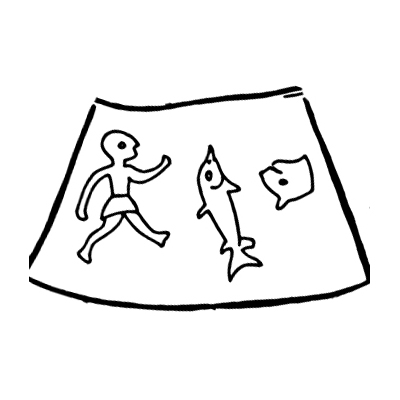

By Robert Bradford Lewis
Fortune brings in some boats that are not steer’d.
-William Shakespeare
Introduction
The Phaistos Disk, housed today in room three of the Heraklion Archaeological Museum at Heraklion,
Crete, was discovered by Dr. Luigi Pernier on July 3rd 1908, at the ruins of the palace of Phaistos
on the island of Crete, which structure collapsed CA 1400 BCE. The disk, made of fine clay and
measuring about 15 cm (roughly six inches) in diameter, was blind printed while the clay was wet, it
was then fired; possibly sometime in the 20th century BCE. The technology for creating the Phaistos
Disk has been cited as an example of movable type. This is simply false. Movable type is,
practically speaking, a “brand name” for the printing process invented by Gutenberg, et
al. In the Gutenberg system, reverse image cast metal types, or punches, are aligned
together within a frame of fixed rows, producing a mirror image of the item to be printed. This
arrangement is then inked and paper is placed on top of it.
When it becomes time to print some
new matter, the type can be dumped, and new text inserted, or set, into the frame of fixed
rows. That’s why movable type is called movable type. This technology requires a press for
imprinting a right way round image upon the paper to be printed.
The combined technologies of
cast metal type and press, however, were not introduced to the west until the 15th century of the
Common Era, both of these having Chinese prototypes from the 1st millennium CE. The technology that
preceded it, required the use of carved blocks of wood or stone with the reverse image of the item
to be printed engraved upon them, literally carved in stone; unmovable, hence, not movable
type. The disk’s signs were simply pressed into the clay by hand with punches, one at a time
and not by any mechanical process. Therefore, if we are going to call the Phaistos Disk an example
of movable type printing, we might as well call every cuneiform text ever unearthed from the
amnemonic sands of the ancient Near East, the end product of movable type, since the technology is
the same: a human hand, with a stylus or punch, impressing graphemes into wet clay. If cuneiform
— the worlds oldest extant writing system — can be called movable type printing, then as
an example of printing by means of movable type, the Phaistos Disk is of no great moment of all. But
this is not the case. The Phaistos Disk is full of superlatives, being an example of movable type
printing, however, is not among them.
The disk’s signs, seemingly inscrutable images from the everyday life and concepts of its culture, cover the disk in a spiral pattern on both sides, divided into 31 cells on one side and 30 cells on the other and number a total of 46 (counting the oblique slash, which, all things being equal, no evidence requires us to discount as a sign) unique signs. These signs repeat 259 times, 132 times on the recto side and 127 times on the verso side — again, counting the oblique slash, of which there are 17 total on the disk. No one need take my word for any of this, since there are actually very good photos of both sides of the disk on the otherwise somewhat contentious Phaistos Disk Wikipedia page, and you can enlarge any area on the disk with a click. All the signs may be counted effortlessly there (I use Sir Arthur Evans’ numbering at all times here) and please, count the oblique slashes in particular and see; there are nine on the recto side (at A5, A10, A11, A13, A16, A17, A20, A29 and A31) and eight on the verso side (B1, B5, B7, B10, B11, B13, B25 and B28). My advice is that you should always have these disk images at the ready in new tabs, while perusing this decipherment.
Many claims of decipherment have been put forward over the years, but thus far, none of them have earned the approval of the larger scientific community. I have attempted a decipherment of the disk, from first principles. Undoubtedly there will be mistakes (no decipherment springs perfectly formed from the head of Zeus), these have been and will be corrected as I discern them; every conclusion in this undertaking should stem from hard-boiled scientific principles after all, and if I can, I will show you the reader, the rationale behind my conclusions, every step of the way.
The Received Wisdom
There is much said and written about this disk that can be categorized under received wisdom, i.e. perpetuated error. Much of this received wisdom is treated as “established fact” by otherwise smart and talented scientists who, evidently, have never attempted their own decipherments of the Phaistos Disk, and really, too many of those researchers who have attempted their own decipherments, have simply followed blindly along. Unexamined assumptions about directionality, writing system and provenance, are a few examples of this blindness. Directionality seems to me the most egregious of these, since I believe that this inability to see is simply a matter of lax observation. Provenance is the least blameworthy, since the Phaistos Disk was, after all, discovered on Crete. But is the Phaistos Disk from Crete? I submit that it is not. And to assume that the Phaistos Disk is Minoan, simply because it was discovered on Crete, is like assuming that the Gundestrup Cauldron must be Viking, because it was found in a Danish bog; we know better of course. But if the Phaistos Disk is Minoan, then someone should probably explain, why its clay is of non-Cretan type, as Gustave Glotz (1925:381) has observed; why the disk’s edge is so finely formed, which finely formed edge is a cut above the usual Minoan technique; and why the disk was deliberately fired, which firing was not the standard Minoan practice. And perhaps do so without resorting to accusations of forgery, since my research (as you will see) indicates that this disk is the genuine article; in this regard, lime scale deposits observable on both sides of the disk and its interstices, might be relevant. A sufficiently evidenced decipherment that posits a non-Minoan origin for the disk, should answer these particular problems well.
In any case, it occurs to me that over 100 years of “received wisdom” based decipherment attempts, have gotten us nothing that is unarguably convincing. Perhaps it is time to put aside certain of these received wisdoms for a moment and try a different, empirical approach; an approach based as much as possible on raw data, rather than received wisdom. One starts this process with the unrefined evidence presented: the disk itself, and the close investigation of its signs, before moving on to hypothesis. This is the inductive half of the inductive/deductive loop that all science must follow. One then builds a lexicon. Any hypothesis is then tested by the possible teasing out of words and sentences, using the lexicon and based upon what has been hypothesized from observation. This is the deductive half of the inductive/deductive loop. To quote archaeologist Andrew White, “Once you are in this loop, you are doing science”. If the words and sentences detected are intelligible and accord anthropologically and or archaeologically and or mythologically and or religiously and or grammatically and or literarily and or poetically with a fixed historical period and geographical location, then one continues the process. If not, then back to square one and the raw data again, before establishing or rejecting any additional hypotheses. Only then can any theory be established. But first we must remove the jumble of scrap and landfill. Removing from our storehouse of knowledge the clutter of a century’s worth of phonetic attempts and syllabic assumptions alone, however, will nearly empty it, and we will need to refill it piece by piece, from the concrete floor up. Let us proceed.
Directionality
One of the most damaging of these “facts” to serious Phaistos Disk research, is the direction of reading. Truly, I have never read a comprehensive argument for a right/left reading of the Phaistos Disk. The left side crowding that some have used as an argument for this, is as far as I can tell, virtually non-existent. Crowding is almost always on the right, which argues for a left/right reading. A27 demonstrates this quite well, as does A3 and B3.
If we look closely at photographs of A27, we see that the back of the mohawked man’s hair, over stamps the shield to its left, thereby proving a left to right stamping of those signs. This is an instance where the received wisdom must take a backseat to the physical evidence, all objections to the contrary notwithstanding. Studying the disk, we can easily guess that the lines were incised first, and the stamps were laid down after.
In A28 is an example of crowding on the left side of its cell. Investigating this area, one detects correction. The area was made too small, and when the artist ran out of room, they simply rubbed out the line, re-stamped the images and re-drew the line around the stamped images, on the right side.
As for center crowding, any crowding detectable there is either deliberate (B1), or the result of trying to fit seven signs into too little space (A3). As such, B1 is no argument for directionality at all, and A3, if anything, argues for a left/right reading. In fact, there has never been a Greek writing system that read exclusively right to left. Sometimes these ancient systems would read vertically, sometimes boustrophedon, yes, but never exclusively right to left. And although the disk is not Greek in origin, it might be worth pointing out — for those who insist that the Phaistos Disk bears some relationship to Linear B — that Linear B, reads left to right. Evidently, for the most part, so does Linear A.
Where to Begin
The Phaistos Disk reads left to right. Starting from the center of the disk would be the most logical place to begin a left/right reading of the disk. My having deciphered the verso (B) side first, demonstrated clearly to me that the recto (A) side, center, is the correct place to begin.
A Word About the Writing System
I have looked for a syllabary here. I have searched for phonemic orthography and an alphabet here as well. Their likelihood here seems remote, to the best of my ability to discern, and frankly, I have found a perfectly serviceable solution in a writing system comprised entirely of logograms, pictograms, compounds and determinatives. The system then, will be called logographic. As will become apparent, however, the signs found here, are atypical, since they encode neither phonetics nor grammar; the grammar present here is context and word order based, rather than spelling based. Very well, we have a hypothesis regarding the writing system and directionality, and presumably we have a culture to go along with it. Where then is the corpus that would have served a language or for that matter, any culture?
This question of corpus, by the way, is better put to syllabaries belonging to cultures literary enough to have authored the disk, which systems would probably have created texts at a faster clip than any logographic systems could. Certainly any logographic system meant to serve the writing needs of an entire language, and which system employed the punch, would require many more punches to hunt and peck for, than the 46 signs found here. The speed alone at which individual punches could be located in a syllabic as opposed to a logographic system, would ease the process considerably. One needs approximately 41 to 99 signs for a syllabary to serve the writing needs of an entire language. These signs could be carried about in a leather bag tied at the waist; a logographic writing system requiring punches, might conceivably need an entire room just to house it. And we do have 46 signs here, but one does not simply toss a syllabary away after authoring one text, one creates a corpus. So where is it? How do we account for the missing texts that a syllabic writing system would have produced, or for that matter, the missing punches — thousands of them for all we know — that a logographic writing system would have necessitated?
This is not to say the Phaistos Disk was never re-printed, almost certainly it was. But even if we had 25 copies of the disk before us, having still only 46 unique signs to work with, we would find ourselves not much better off.
What are we to do with the raw data of only 46 unique signs and no corpus? Consider: what if the signs in question were not meant to serve the writing needs of the entire language, only the story on the disk. In which case 46 might do. 46 signs, one of which (the flower) is actually a determinative. Another (the walking man), is both logogram and determinative, as we shall see. A lexicon has been provided (see the menu at the top of the page) so that the reader might check my work. And do look by all means, because the legitimacy of this decipherment depends entirely upon the accuracy of the signs as I have defined them, and the narrative that accrues when they are read in the proper order.
The Story
What information can be found on the Phaistos Disk? In the 20th century of the Common Era, there were eight million stories in The Naked City. In the Bronze Age, mostly just four stories, to wit: how the gods came to be, how the world came to be, how the kings came to be and of course, the ubiquitous, mythical, worldwide flood. The Phaistos Disk contains at least two of those stories. On the recto side is a royal genealogy of deified kings, and on the verso side, is a mythical flood narrative. And this flood narrative contains aspects of both a local flood, and a world wide flood. It is a very old story, indeed. A glance at the recto side reveals easily the genealogical aspects of the disk. A10, A13 and A16 contain the signs for “king” and “deified”. At A11 and A17 are the words “he fathered”. Next to these words at A9, A12 and A15 can be found the names of these kings. If my estimation of this document’s age — roughly 4000 years old — is correct, then the Phaistos Disk is, as of this writing, the oldest complete (that is, not assembled out of random fragments of varying age and quality, etc.) flood text that we have.
I use the term decipherment here, loosely, as do all other “decipherests” of the Phaistos Disk. The disk cannot be deciphered, because the disk is not a cipher in the first place. It is not a cipher, because the disk is not made with an alphabet and all ciphers are alphabetical at their core. What we have before us then, is a narrative consisting of a code of sorts. One that had never been seen before and which was — deliberately — never used again. And undoubtedly they had some syllabic or logo-syllabic writing system for everyday writing tasks, so they would not have needed their “Phaistos” script for that. This code differs from all others in one utterly important respect, however: it was not the intent of its authors for it to be hidden. I submit that this text was sent to perhaps a half-dozen city states throughout the eastern Mediterranean and Near East, announcing the arrival of a new power in the world. This is the usual “making a name” that one finds throughout the literature of certain ancient texts.
The Phaistos Disk contains the mythologized history of a family; that is to say, it encompasses both history and myth. It is a story as violent and lusty as any saga. Written at the dawn of Western civilization, it is no less than the founding document of Western civilization; having profoundly influenced both ancient Greek and ancient Near Eastern culture. This text is also something of a primitive grimoire, containing a list of deified ancestors (possibly for invocation purposes), and a Seal of Solomon (or whatever it was called by the disk’s authors) buried deep within the maths implicit here. And this text anticipates — in more than a few respects — both Jung and Freud. This story was a story so altogether holy to its authors, that out of reverence for it, this unique writing system was tailor-made, given to it and then studiously put aside. We are remarkably fortunate to have it.
The Language of the Disk
The Phaistos Disk was written by a people, which people certainly spoke a language. That language was Ugaritic — not to be confused with Ugric, as in Finno-Ugric, a language family entirely unrelated to Ugaritic. Ugaritic is a Northwest Semitic language and very closely related to Hebrew; so much so, that like Hebrew, it is spelled without vowels. For those of you who can neither read nor write in Ugaritic, however, this will be of little help, and I am certainly no expert. But one needn’t be an expert in Ugaritic, in order to know things about Ugaritic; text books can be quite helpful in this regard and the strongly pictorial (and non-alphabetic, non-syllabic) character of this technically logographic writing system, makes this writing system — for our purposes anyway — largely non-language specific (although elements of the language’s grammar do, occasionally, express themselves), therefore giving itself well to translation by the non-Ugaritic reader. The vocabulary too is very basic and limited to ideas as common today as they were then. Therefore, if the disk is deciphered word for word — although due to the limited Ugaritic word-stock, some paraphrasing has been necessary — the original word order will be preserved intact. This understanding is vital to a decipherment of the Phaistos Disk.
It shouldn’t come as any surprise that the Phaistos Disk has its origin in the city state of Ugarit. Ugarit was a multicultural society, and although it was not the cradle of writing (that would be Sumer), it was the nursery school of writing par excellence; no less than eight languages were spoken at the height of its culture. At this cultural apex, in the 15th to 13th centuries BCE, scribes in Ugarit wrote and or read the Sumerian, Assyrian, Babylonian, Hurrian, Cypriote, Aegean and Hittite writing systems; they were fluent in Egyptian Hieroglyphics as well. This multicultural impetus may even have traveled west; Cyrus H. Gordon has posited a developmental connection between Ugaritic culture and Minoan culture. As for alphabets, it’s certainly true that the Ugaritic people had an alphabet. We know this thanks to the work of Charles Virolleaud, et al. In fact Ugarit invented an early alphabet, a cuneiform alphabet (technically an abjad); but not until about the 15th century BCE, centuries after the disk was made. Their Iron Age cousins, the Phoenicians, bequeathed their alphabet to the Greeks, and the Greeks in turn, bequeathed to us the earliest version of the phonetic alphabet you’re reading now. This marks Ugarit, not as the least likely candidate to have authored the disk, but indeed, a rather likely candidate.
The Rules
There are two different types of sign here, signs of meaning and signs of function. All but one of the signs we will discuss here (the flower sign) have meaning, but a few of those signs of meaning serve specific functions as well, which functions comprise certain parts of speech. As above, there are 46 unique signs on the disk, fully 28 of which mean one thing, respectively and one thing only, whenever one encounters them. Those 28 words comprise the following: attend, barleycorn, beast, branch, child, clothing, death, deified, destroyer, eater, escaped, flood, house, important, number, oar, one, our, place, reed, sea, sired, taken, three, tooth, two, very and woman. 12 additional signs exist within a category of meaning, which categories will include tense, plurals or different parts of speech, depending on the sign. These categories comprise the following 27 words: animal/animals, king/royal, kind/type/types, like/related, boarded/loaded, man/men/maker, our/us, high/over, ox/oxen, ship/ships/boat, side/sided and strike/struck. As with Ugaritic cuneiform, context will sometimes determine the nature of the word in question.
Among the signs of meaning here, there are a few exceptions to the rule of fidelity to meaning. For instance, the oxhide sign for “hides”, “leather” and “oxhide”, can also mean “great” and “greatly”. In Ugaritic, the word for “hides”, “leather” and “oxhide” is msg; the Ugaritic word for “great” and “greatly”, is rb.
There is an oblique slash at the beginning of certain phrases or sentences, which acts as the pronouns “he”, “it”, “they” and the presentative particle “behold”. I find it rather interesting that the presentative particle “behold” (hn), involved in a parasonance with the pronouns “he” (hw), “it” (hw) and “they” (hm) as it is, is used exclusively to introduce men, inanimate objects and groups.
I first learned about parasonance after the fact of deciphering and translating this text. I had decided to spend a day studying the rhetorical expressions of antiquity, when I encountered an online version of G. Khans Encyclopedia of Hebrew Language and Linguistics Vol. 3, P-Z. This was my first knowledge of parasonance and other paronomasia. I then checked the disk for the possible occurrence of these parasonances, etc. The discovery of them here on the Phaistos Disk, took me completely by surprise. Classical parasonance of later 15th century BCE Ugaritic and even later Hebrew type, is a form of wordplay where the noun or verb roots of two or more words differ from each other in only one of their three (or more) radicals. Some of the words in parasonance here, however, are rather primitive, involving only two (as the above example illustrates) and sometimes even one radical apiece. Others here are of a more familiar, classical type. The only cultures in the world that ever produced the parasonance, are the Ugaritic and the Hebrew cultures. The authors of this text were not Hebrews. Since this text constitutes the earliest Ugaritic writing, these puns, perforce, are the earliest examples of parasonance in the world. Remarkable. This business of a sign having more than one meaning, however, is not remarkable, since many of the writing systems of antiquity (e.g. Hittite hieroglyphs and all the cuneiform scripts including Sumerian) contained signs that had multiple values. Even today, with our alphabetic writing systems and spelling based grammars, we have words that are spelled the same, but are pronounced differently and have different meanings, such as bow, the front end of a ship and bow, a knot tied with two loops and two loose ends. We call those words heteronyms.
Two of the disk’s signs categorize signs that not only have meaning, but also serve an important function; one of these, the breast sign, represents the words “came”, “destroyed”, “fell” and “went”, which function is clearly the verb. The Ugaritic verbs for “came”, “destroyed”, “fell” and “went” in the case of this text, are mgy, tkl, qwl and hlk. Three of these verbs, tkl, qwl and hlk, are involved in a parasonance with each other (because there was no alphabet when the disk was fired, the parasonance between qwl and tkl/hlk is strictly aural in nature, since both “q” and “k” are pronounced identically, as a hard k); this is relevant, because most Ugaritic verbs are not in parasonance with each other. But one of these verbs, mgy, is in parasonance with Ugaritic words outside its part of speech, for this breast sign for the verb mgy, is involved in a parasonance with the oxhide sign for the nouns/proper noun, “hides”, “leather” and “oxhide” (see above), msg.
The sideways chevron also serves a function as the words, “for”, “from”, “upon” and “with”, which function is entirely prepositional. As above, these are heteronyms. Significantly, this sideways chevron also houses several puns in one sign, because here, the Ugaritic word “from”, is bd; and it is engaged in a pun with the Ugaritic preposition b,“with”. The Ugaritic words, “for” (l), and “upon” (`al), are also engaged in a pun with each other. And like the breast sign, this sideways chevron sign also puns with one word outside its part of speech, because bd is involved in a parasonance with the oxhide sign for rb, the Ugaritic adjective for “great” and “greatly” (see above). The puns and parasonances of these nouns, pronouns, adjectives, verbs and prepositions, seem deliberate to me. Whatever the case, there are parasonances to be found throughout this narrative that are absolutely deliberate on the part of the authors of this text.
There are also two determinatives, the flower and the walking man. The flower alters the meaning of signs, as such, it is purely a sign of function; and the flower serves the same function every time one finds it on the disk. The flower’s sole function is to turn verbs into adverbs and nouns into adjectives.
The walking man is primarily a sign of function, but it is also a sign of meaning and serves two specific needs, being a determinative and a logogram. As a determinative it turns verbs into other verbs and nouns into other nouns. As a logogram it means “walking”. This phenomenon of a multi purpose sign, is not unheard of in ancient scripts (e.g. Egyptian hieroglyphs, Hittite hieroglyphs, Sumerian cuneiform), so should not come as any great wonderment. We call this phenomenon polyvalence. Admittedly, however, these two determinatives are exotic, one might even say unique, since there are no other determinatives of record that I know of, that deal with parts of speech.
Building Words

Signs can sometimes pair with other signs to create compounds. For example, the logogram for “like” and “related” is a fish; paired with the walking man, it means “swam” (“walking like” i.e. “swam”); paired with the cat’s head it means “fish” (“like animal” i.e. “fish”); paired with the barleycorn, it means “food” (“like barley corn” i.e. “food”). To the right, is to be found an example of such word usage.
In fact, this text is replete with words made up of multiple signs, either as individual words that have a determinative associated with them, or words made up of exocentric and endocentric compounds; some of which compound words will have determinatives associated with them as well.
The categorical parts of these sign groupings that have determinatives associated with them will not appear in the finalized text of this ancient narrative, nor will the component parts of the exocentric and endocentric compounds, since all of these will have become subsumed within a finalized narrative devoid of loose ends.
The People of the Disk
Archaeologists generally consider the Middle Bronze Age city state of Ugarit (NW coast of Syria, at Ras Shamra, roughly 1000 kilometers or 600 miles east of Phaistos) to have been an essentially Amorite city, since the polity of Ugarit was typically Amorite, as was the case in many other Levantine city states ca. 2000 — 1600 BCE, aka the Amorite period. In this vein, I am of the opinion that it was a Middle Bronze Age dynasty of newly arrived Amorites, who resettled the already ancient site surrounding an abandoned tel at Ugarit (the first literary references to it are in 19th century BCE Eblaic texts), that commissioned the Phaistos Disk. That this disk was produced at Ugarit will, I hope, be demonstrated by, among other things, the sentence to be found at A25 and A26: “sea beast great caused flood great”. The people of Ugarit harbored an ancient dread of just such a mythical creature. The people of Ugarit were also virtually alone among Semitic people in reading and writing primarily left to right, once they adopted cuneiform. The word order (Ugaritic: there are ten V-S-O, two S-O-V and thirteen S-V-O sentences here, for a total of 25 sentences), word play (parasonance and other paronomasia) and style of poetry (involving parallelisms of a markedly Ugaritic feather, including nine chiasms, four formal parallelisms, two envelope parallelisms, one forked parallelism and parallelisms of bicolon, tetracolon, pentacolon, hexacolon and heptacolon type, as well as many number parallelisms) inherent in the disk, also lend themselves to this conclusion. In fact, there are 16 linguistic parallelisms and 63 number parallelisms, in total, within this text. There are doublets here as well, 11 of them to be precise, three of which are flood doublets. This resettlement by Amorites of the previously abandoned site of Ugarit, took place at about the same time, or just prior to, the overthrow of the Neo-Sumerian Ur III city state of Babylon, by other Amorites. The late 3rd millennium abandonment of Ugarit, was probably the result of a drought plagued Mediterranean and Near East. As we shall see, there were others lurking nearby, who coveted this particular location as well.
The “Proof”
It is widely supposed that science has no concept of proof. Nevertheless, science acts as if it knows something akin to it. For example, has science settled the matter of whether the Earth is round (ish) or not? We seem to think it has. In fact, we wager the lives of astronauts, commercial jet passengers, entire crews, and ordinary citizens everywhere — all of these, confident in the idea that satellites orbiting the planet, will continue to assure the safety and convenience of all concerned — on the theory that the Earth is, in fact, round. And when rockets and jets and satellites do crash, we still insist, rightly, that the Earth is round. However this may be, science does suppose itself to have a concept of disproof; which, it seems to me, is merely the corollary of proof, i.e. proving that a given phenomenon or proposition is false. Despite this logic puzzle, it is clear that falsifiability is an integral facet of science (more on this under the heading Falsifiability, bellow); in the meantime, for the reader who can accept the idea of anything like scientific proof for a Phaistos Disk decipherment/translation, this paper offers the closest thing to it, thus far.
The lexicon, narrative and Ugaritic word order in this scientific endeavor, play their respective parts in what I consider links in the chain of proof for this decipherment. A hypothesised lexicon and rules of grammar, wherein all the signs must and do function as the lexicon etc. say they will in every instance, is key. Regarding these fascinating signs and their respective meanings, it might do well to ask how I know that they mean what I say they do. The danger, in this respect, is that I might be accused of engaging in “guesswork”. Trial and error is, I think, the accurate term for it and furthermore, a valid unit of science: “It’s therefore not unscientific to take a guess, although many people who are not in science think it is” — Richard Feynman. And my guesswork is always tested. This process of testing and selection involves, but is certainly not limited to, a conscientious study of the image value of the sign, the context of the sign within the sentence and the context of the sentence within the narrative, in order to identify the idea behind the sign; thus engendering semantic coherence. This hermeneutic approach to the deciphering of the disk, is used over and over again in my analysis of it. Over two centuries of study in these matters validate as well, that genealogies, and the pattern of signs that they demonstrate — very typical of royal inscriptions like the Phaistos Disk — can be most helpful with problems of decipherment indeed. Logic and intuition definitely apply here; these methods are tried and true and cannot be equaled by mere statistics.
A consequence of the lexicon etc. is the narrative that emerges from it, which narrative is
not only clear, but which also exhibits decidedly Semitic qualities in cut (parallelisms), plot
device (genealogy, flood, flood dragon) and in its use of typical Ugaritic word play, etc.
Another consequence of these hypotheses is the mathematics that emerges from the cell count, which elementary school math is watertight. This math can all be investigated by anyone, under the heading; A Few Thoughts on Numbers Mysticism, Exhibits J, K, L and M.
Another important consequence, is the above mentioned Ugaritic word order, which order cannot happen randomly, but must and will show itself, like a fingerprint, if its author is Ugaritic. The dominant word order for Ugaritic is verb-subject-object, subject-object-verb, noun-adjective and possessed-possessor. Subject-verb-object as an alternative (or marked) word order will occasionally crop up in Ugaritic and sometimes the adjective will precede the noun.
I first investigated the word order of the my decipherment to determine if the Phaistos Disk was a hoax or not. I had already ascertained that the artifact I was evaluating was composed of a narrative, and the very idea that a hoaxer would deliberately encode any hoax with an actual narrative seemed absurd to me. But certain voices had been raised in protest against the authenticity of the disk, so in the name of scientific rigor, I decided to breakdown its word order. I reasoned that a hoaxer was not likely forward thinking enough, to have left their native word order, out of any hoaxed artifact written in an undeciphered language, such as Minoan. Therefore if the word order of my decipherment had been Italian or something close to it, it would seem fair to have assumed that Dr. Pernier, of Italian extraction, was the perpetrator of said hoax. I was surprised (and relieved for Dr. Pernier’s reputation, although I had always esteemed him an honest man) to discover that the word order of this text, is Ugaritic; indeed, V-S-O word order in Italian is simply ungrammatical. To quote S.T. Grimshaw, “Not even context may force a V-S-O word order in Italian”.
In all the world, there were perhaps little more than two dozen languages whose writing systems had come into existence during, or prior to, the 15th century BCE, when the palace of Phaistos collapsed on top of the disk. Putting our Bronze Age disk and its curious signs aside for a moment, those writing systems included the following: Sumerian cuneiform, Egyptian hieroglyphics, Eblaite cuneiform, Akkadian cuneiform, Elamite cuneiform, Babylonian cuneiform, Assyrian cuneiform, proto-Canaanite, proto-Sinaitic, the (conjectural) Harappan writing of the Indus valley, Byblian hieroglyphics, Hittite cuneiform, Luvian hieroglyphics, Hurrian cuneiform, Cretan linear A and Cretan hieroglyphics, Mycenaean linear B, Ugaritic alphabetic cuneiform, various other alphabets and Chinese characters. Some of these cultures’ writing systems predate the disk, and those cultures, therefore, are not likely to have produced the disk. That said, how many of the above listed archaic writing systems, demonstrate a left/right reading orientation and V-S-O, S-O-V word order? We can eliminate undeciphered — or at best, badly understood — writing systems like Cretan hieroglyphics, Indus writing and Byblos as entirely unhelpful to our search. Chinese word order is S-V-O and S-O-V; proto-Canaanite and proto-Sinaitic were restricted to meager inscriptions on rock faces and so can give us no secure word order at all. Mycenaean was restricted to lists and inventories and so is also not entirely helpful to our task. Of the remainder, only one, Ugaritic, gives us the V-S-O, S-O-V word order and the left/right reading direction we seek. All the rest that have any corpus we can investigate, have non V-S-O, S-O-V word orders except Egyptian hieroglyphics and, stretching our historical parameters a bit, Phoenician. But Phoenician reads right/left and Egyptian hieroglyphs, which can read in either direction, look nothing like the figures on the disk and anciently, never did.
Now I had a proper word order, but wasn’t I still left with the problem of the ardently wished
for external evidence: another text, or whathaveyou, in Phaistos script, the seemingly impossible to
find and supposedly utterly necessary solution to the problem of proving any Phaistos Disk
decipherment, that a “missing” Phaistos text might certainly (but not in all cases) have
resolved? This problem of reproducibility is dealt with here by demonstrating that another
such text is not the only type of reproducibility possible, the archaeological and anthropological
evidentiary value of clay, sign and cell, is significant; and by showing that our disk had an
influence on other ancient texts. As for internal evidence, there are acres of lexical and
grammatical cohesion here, so the problem of repeatability is solved. But
exactly how many words does another text written in Phaistos script, need to possess in common with
our disk, or for that matter, precisely how long does the text itself need to be, in order for it to
be an effective tool for testing any decipherment of the disk? No one knows the answers to these
questions; and until they do, no one has the scientific authority to say that the Phaistos
Disk hasn’t enough data to be firmly deciphered. The blind acceptance of such an idea would
constitute an appeal to authority fallacy. This sort of loose thinking is already rampant
in Phaistos Disk research. But from the start I knew, that provided both sides of the disk shared
enough words in common, and provided that the text were sufficiently long, one could conceivably use
the undeciphered half of any partial decipherment of the disk, to test the validity of the
principles derived from unlocking the deciphered half of the disk. So that is exactly what I did.
And here I’ve found both reproducibility and repeatability: true metrics of precision. I
further that these external and internal evidences obviate the alleged requirement for another
document written in Phaistos. I say alleged, because in truth this other text, should it ever be
found, would be useless to anyone proposing a Minoan decipherment. This is the case, because a
Minoan decipherment would still only consist of a lot of sound values, the actual values of which,
we still wouldn’t understand, since we still don’t know Minoan. And really, all of this
rigamarole would be unnecessary for a decipherment in a known language, such as Ugaritic. We already
know that Linear A is Minoan, therefore, if Minoan is ever to be deciphered, this will doubtless
come by way of Linear A, not the Phaistos Disk.
The Ugaritic word order, the Ugaritic parallelisms, the parasonances, the paronomasia, the typically
Semitic plot devices and the decisive mathematical cell count, are all consequences in this risky,
multi-headed hypothesis of lexicon, provenance, directionality and writing system. Taking these
consequences into consideration, along with the proportionate number of words shared within this
sufficiently long text, and taking into account the Phaistos Disk’s influence upon other
ancient texts, the problem of verification is now resolved. This verification comes at the mandate
of the evidence, and does not have to depend for its resolution, on a different text written in
Phaistos signs. But is this evidence scientific? In other words, is it falsifiable?
Falsifiability
It will occasionally happen, that a scientist is accused of producing a work that is neither provable nor disprovable, that is to say, which does not give itself well to falsifiability. Therefore, in order to counter this charge in advance, I offer the following:
So how should anyone who wishes to experiment, attempt a falsification of this hypothesis? I would begin by attacking the links in the chain of proof for it. First, demonstrate that there are no deliberate parallelisms in its text. Then, demonstrate that my triliteral parasonances aren’t exactly what I say they are. Finally, demonstrate that my word order isn’t truly Ugaritic in character. If you can demonstrate that 51% or more of these phenomena are false, then you will have succeeded. In lieu of this, however, I respectfully submit, my hypothesis stands as proved; since none of these three phenomena, manifestly arising together time and again within the same text, could have happened accidentally. And then there is the math (as above, under the heading: A Few Thoughts on Numbers Mysticism, Exhibits J, K, L and M). If you, the reader, disagree with my paper and any of its conclusions, however, you should feel free by all means to write a review delineating your concerns with it; since any scientist worth the name, looks forward to peer review.
Reading the Disk
Side A, Part 1
Let us begin at A1, where we encounter our first sign, the flower sign. This sign consists of a flower with eight petals, arrayed around a central disk. This is called a rosette and it became a symbol of ‘Astarte, Ugaritic goddess of love/fertility/sex, the heavens, etc., after her fusion with the Babylonian goddess Ishtar; Ishtar, in her turn, had already become fused with the Sumerian goddess Inanna. ‘Astarte was styled: “Lady-Of-The-Steppes” by early nomadic Amorite worshipers. This sign is a determinative. This rosette is a stylized star, which was Ishtar’s symbol, and it alludes to ‘Astarte (meaning “star”) via a form of wordplay called translexical punning, or allusive paronomasia. This happens when a word or phrase, etc. (in this case, “‘Astarte”), is educed from the reading or hearing of a text, and which words are pertinent to it, but which do not actually appear in the text at hand. Next to it, we see the bald man’s head, a logogram. The man is a slave as evidenced by his face brand, so the meaning of it alone without the oar sign or the determinative, is “attend”, a verb. The bald man is looking rather intently at the oar, which is a pictogram; this gives us the exocentric compound, “attend oar” i.e. “row”, a verb. With the determinative the word becomes the exocentric compound, “manifestly”, an adverb. At A2, the walking man as determinative begins the set. Here, it is determining the sign to its right, the war club sign for the verbs “strike and struck”; in this case, the verb is “strike”. This gives us the intransitive verb “warring”.
At A3 is found an epithet: “Our-Side-Branch-Great-Great” and please notice the noun-adjective sequence of “side branch great great” that we want in a proper Ugaritic word order. The sign at the beginning of this name looks like an uppercase “E” with fringes. This is a clan type or emblem for another person we will encounter. Her epithet: “Kitchen-Wife”. This sign has been identified by some as depicting a comb; this seems correct to me and it should be noted that since antiquity, the comb has been exclusively associated with women. Whatever the case, it is a logogram and functions as the word “our”.
Much has been made of this comb image by Phaistos Disk researchers, due to its similarity to two other Minoan artifacts. Because of these other curious impressions, it is supposed by some that the Minoan provenance of the Phaistos Disk is all but proved. First, there is the sealing impression, on display at Heraklion, which resembles very much our comb. Then there is also a bowl (cataloged F4718), with what has been called a potters mark impressed upon its underside, and this also resembles the comb sign on the disk. Both these artifacts are from Phaistos. What we need to consider is the fact that, in the first place, these images on the disk, on the bowl and the sealing are not identical. The comb on the bowl has six teeth projecting from either side of it. The sealing’s comb has five teeth projecting from both its sides and the sign on the disk has only four teeth on each side. In the second place, these three images appear to have different functions. The disk sign is clearly a grapheme that functions within a writing system. The images on the bowl and the seal appear to be simple identifiers of a product, a workshop, a potter or perhaps the owner’s name. These stamped images having been discovered solely at Phaistos (and having no relationship to any other site), it might even be the case that they were cribbed from the disk sometime after its arrival there. As above, I have given this sign on the disk the value “our” and what better logo could a 15th century BCE pottery workshop want? Other impressions in clay, unearthed on Crete, have been put forward as being identical to some of the stamped images on the disk; these “observations” are all based upon the most flagrant wishful thinking, as none of them resemble strongly the impressions on our disk. The presence of flower and spiral images found on Crete are of no help either, since images of this type are not unique to Crete, but are nigh on universal. Likewise, most of the so called resemblances between the signs on the disk and the figures on the Arkalochori ax, are ambitious at best. Anyway, Glotz said that the disk’s clay does not come from Crete. The clay the disk is made from is the best evidence we have of the disk’s origin — non-Cretan apparently — and until someone proves Glotz wrong, we can safely ignore any evidence these other images allegedly provide, regarding the origin of the Phaistos Disk. Therefore, contra Alice Kober, and with all due respect, the disk should be viewed as non-Cretan until proven otherwise.
The second sign from the left in A3, probably depicts some species of reed. It is also a logogram, and it means “side” and “sided”; here, it wants to say “side”. The next sign in this set is the branch, it is a pictogram and simply means “branch”. This branch sign has five leaves upon it; its leaves are spade shaped and have several lobes upon them. This branch resembles very much a Tabor oak branch. The Tabor oak was one of many trees that were used in the ancient Near East, to depict the `Asherah tree. To the right of this branch are two oxhide signs; each of these, in this instance, mean “great”.
At A4, is the exocentric compound “manifestly” again. At A5, the clause “behold branch number one”. Once again, the diagonal slash at the beginning of any phrase or clause means “he”, “it”, “they” or “behold” in every instance of its use. Here it means to say “behold”. Again, the branch sign is a pictogram, and it simply means “branch”, while the middle sign, which looks like a lowercase “y” regardless of whatever it actually depicts, means “number”. The logogram at the right in this set is a mace, and it gives us the word, “one”. Here the Ugaritic word for “behold” (hn), is in a three way parasonance with the Ugaritic word for “branch”, (ht), and with the Ugaritic word for “number”, (hg). Here also, we see that the Ugaritic number “one” (`ahd), is involved in a three way pun with the Ugaritic words for “behold”, “branch” and “number”.
What this passage means to say — and in every whit poetically, at any rate, succeeds in so doing — is that this man, Our-Side-Branch-Great-Great, not a king but a progenitor of kings and a warlord, came forth out of the obscurity that most men spend their entire lives in, “manifestly” waging war; thereby “manifestly” founding as a consequence, “branch number one”. The attitude toward war was quite different in the Bronze Age. They were not only not ashamed of it, as many of us purport to be, but very much the opposite, quite overweeningly proud of it. At least they were honest in their sympathies. A1, A2, A3, A4 and A5 comprise a pentacolon in the form of an envelope parallelism. This parallelism has an ABCAD structure. In this parallelism, the adverb “manifestly” in the first A-line, exactly parallels the same adverb, “manifestly” in the second A-line; the B-line, “warring”, thematically parallels the C-line “Our-Side-Branch-Great-Great” because he is the one doing the warring. The C-line “Our-Side-Branch-Great-Great” is also thematically paralleled by the D-line “behold branch number one”, because he is the founder of said branch. And despite the fact that this closing D-line stands outside the envelope, it is nonetheless part and parcel of the same parallelism.
At A6 is a man’s name, “Warrior”. The walking man for the verb “walking”, begins this set. To the right of this, is the war club logogram for the verbs “strike” and “struck”. In this instance the verb is “strike”. And these two signs are combined as units within the endocentric compound, “walking strike”, i.e. the noun “war”; to be glossed, “Warrior”, since this is a man’s proper name. The Ugaritic verb “walk”, is spelled hlk. The Ugaritic verb “strike”, is spelled hlm. These two verbs then, are in parasonance. The shield sign for the word “important”, is next in this set, and it stands next to the mohawked man’s head sign for “man”, “men”, “maker”. In this instance, the word is “man”. This sign configuration means to tell us that this is the name of an important man. When the two signs for “important” and “man” are paired with proper names, epithets and titles, however, the words “important man” are silent. The Ugaritic word bns, means “man”, the Ugaritic word bnsm means “men”. These two words then, are involved in a pun with each other. The Ugaritic word for “maker”, is nsk. And so this word is in parasonance with the Ugaritic word for “man”, as above, bns.
At A7, are logograms consisting of the shield, the bull’s horn and a bird of prey, probably an eagle. Together these signs mean, “important king deified”. The shield logogram for the word “important” begins this set; the next sign to the right of this shield, is the bull’s horn logogram and it gives us the words “king” and “royal”. In this instance the word is “king”. To the right of these signs, is the eagle logogram. The eagle was, in some cultures in the ancient world, a psychopomp (a conductor of souls), which being was a standard concept in Ugaritic religious thought. This eagle carries something in its talons, it depicts a psychopomp carrying a deceased king to the netherworld. This sign gives us the word “deified” and alludes to Shapash, goddess of the sun, judge supreme and psychopomp to kings in the Ugaritic pantheon. A6 and A7 comprise a bicolon; a formal parallelism with an AB structure. Here, although there is no true parallelism (as per all formal parallelisms), the idea contained in the A-line, “Warrior”, is elaborated upon in the B-line, “important king deified”.
This man died without male issue, evidently, or perhaps without any issue at all, and A8 explains what happens next: “number three upon (a) woman”, this is to say, through a related female line. The logogram for the word “number” begins this set. To this logogram’s right, is the logogram for the number three, thus giving us the word “three”. The next sign in this set, is a sideways chevron; this logogram gives us the prepositions, “for”, “from”, “upon” and “with”. In this instance, the preposition is “upon”. To the right of this, is a pictogram for the word “woman”. This woman, whoever she was (certainly whichever of the deceased king’s wives had royal prerogative in matters of inheritance: the chief queen, or rabitu), was automatically of the royal line by virtue of being the widow of the deceased king, and when she remarried it was probably to a man of lesser rank; hence the phrase “upon woman”, rather than through some royal male identified by name. This unnamed man was probably a cousin of the deceased king, rather than a brother. This would explain why Our-Side-Branch-Great-Great is not listed as Warrior’s father, because he was not, he was probably Warrior’s uncle and after Warrior’s death, the queen mother married the son of Our-Side-Branch-Great-Great. This man is not named on the disk because he was not of the royal line. After all, the royal line – not the genealogy – starts with Warrior, not Our-Side-Branch-Great-Great. A type of levirate marriage, called yibbum, to her deceased husband’s cousin was allowed, and this would have enabled her to inherit her late husbands estate, provided he had no brothers who might lay claim to it. At Ugarit, royal descent through the female line was allowed when circumstances required it; matrilineal descent was mandatory for the ancient Elamite dynasties, this is the case with the Egyptian royal lines as well, and a tradition of matrilineal descent has been kept alive to the present day, by Jews.
The second sign on the left in A8 is somewhat odd. We do know that whatever this sign in A8 is a depiction of (a pot lid, or a shoemaker’s knife?), it is not the number “one” because we have already encountered it. We will encounter “two”, but this is not it. I have identified this logogram as the logogram for the number “three” on the following basis: If the item in question is a shoemaker’s knife, its blade was made of copper or bronze. The Ugaritic word for both copper and for bronze, is “talatu”. This is also the Ugaritic word for the number three. And If we have identified this sign and its meaning correctly, then this would mean that the word for woman, `att, is engaged in a pun with the word for three, tlt, linking mother to child by means of parasonance. As above, parasonance is a type of word play where the noun or verb roots of two or more words differ from each other in one of their three or more radicals.
This “number three” is found at A9: “Oxhide”, a proper noun composed of no less than seven signs, employed for a specificity that such signs can only express by piling sign upon sign upon sign; in this instance, in order to differentiate “Oxhide” from any of this sign’s other meanings, since a total of five words share this same sign. It reads “oxhide from place oxen hides”, and by “place oxen hides”, it means a tannery. In this set, the oxhide sign to the far left (in this instance the meaning is “Oxhide”); the sideways chevron for the words “for”, “from”, “upon” and “with” (here the meaning is “from”); the dove sign for the word “place”; the oxbow yoke sign for the words “ox” and “oxen” (in this case the word is “oxen”) and the oxhide sign at the far right in this set (in this instance the meaning is “hides”) are all acting as the component parts of an endocentric compound. As above, the third sign from the left in this set is a dove and it is the logogram for the word “place”. This word place is engaged in a word play with its sign, the dove. The word for dove in Ugaritic is ynt, a noun. The word for “to place” in Ugaritic is, ytn a verb. This word play is called anagramic paronomasia. This occurs when the radicals of two or more roots are simply anagramic to each other, and both paronomasia and parasonance can work across parts of speech and violate other aspects of grammar, such as tense, etc. This pun, however, like some of the others in this text, would have been lost on a listening audience, since it is in essence a visual pun; scribes at Ugarit were fond of visual puns. A verbal pun like we saw with the words “three” and “woman”, would have been communicated through pronunciation rather than trough visual cues and certainly not through spelling, since no Ugaritic alphabet existed at this time in history. We will see this sign twice more.
Counting from A1 round the disk, one can see that Oxhide is indeed the third important man listed, confirming the choice of “three” in A8. He is also the second king so called by name, for at A10, is the logogram for the words “king” and “royal”, the bull’s horn. In this instance, the word is “king”. Projecting downward from this sign, is an oblique slash; the logogram for the words, “he”, “it”, “they” and “behold”. In this case, the word is “behold”. To the right of this, is the bird of prey sign, logogram for the word “deified”. We have seen this sign once and we will see this sign again, but unlike all the other examples of this bird of prey sign on the disk, this one is flying upside-down. The artist meant for this sign to face upright. This sign got past the editors, and I class the unusual positioning of this sign an unimportant typographical error. The sign to the far right in A11, is a depiction of a foreleg of an ungulate. This is the logogram for the word “sired”, a verb and its meaning is altered by the walking man to its left, a determinative; so that the word becomes another verb, “fathered”. Projecting downward at the far left in this set is the diagonal slash, the logogram for the words “he”, “it”, “they” and “behold”. In this case, the word is “he”; giving us the two word phrase, “he fathered”. At A12 is a man’s name. The sideways chevron logogram for “for”, “from”, “upon” and “with”, begins this set. Here it gives us the word, “with”. To the right of this, is the mace logogram for the word “one”. To the right of this, is the oar pictogram for the word “oar”. To the right of this, is the ship pictogram for the words “ship”, “ships”, “boat”. Here it means to say, “boat”. To the right of this, is the oxhide sign for “hides”, “leather”, “oxhide”, “great” and “greatly”. In this instance, the word is “leather”. The sideways chevron logogram, the mace logogram, the oar pictogram, the ship pictogram and the oxhide sign are all acting as units within an endocentric compound, “Coracle”; literally, “with one oar boat (of) leather”. To the right of these signs, is the mohawked man’s head sign, for “man”, “men” and “maker”. In this instance, the word is “maker”, so that all these signs together give us yet another endocentric compound: “Coracle-Maker”. Notice that in this set, despite the fact that this is clearly a man’s name, there is no shield sign for the word “important”. Whenever the shield sign in anyone’s name is absent, this means that we have an occupational name, evidently derived from said person’s vocation. We will see more of these occupational names. A8, A9, A10, A11 and A12 constitute a tetracolon in the form of a chiasm. This parallelism has an ABCD structure. In this parallelism, the A line, “number three upon woman”, parallels the D-line “he fathered Coracle-Maker”, with a parental theme. The B-line, “Oxhide” thematically parallels the C-line, “behold king deified”, because Oxhide is the deified king at issue.
At A13 is the clause, “behold king deified”. But look at what happens in A14, not “he fathered” but the phrase, “one related”. The mace logogram for “one” and the fish sign, the logogram for the words “like” and “related” (in this instance, the word is “related”), are both acting as units within an endocentric compound. And please note the noun-adjective pairing of the phrase “one related”, that we look for in a proper Ugaritic word order. This “one related” at A14, who is in fact one and the same as the Coracle-Maker in A12, is the uncle or senior first cousin once removed, but not the father and probably not a brother (see below) of the next male in the line of succession (A15); and so the sense here, is that “one related” means to say “fostered”.
At A15 is to be found this kings epithet: “Our-Side-Branch-Great-Great”, a repeat of A3 and the noun-adjective sequence “side branch great great”; this is a doublet, a name doublet actually, of the first Our-Side-Branch-Great-Great. But observe that the ox hides in this name, face the ox hides in A3. These two, A3 and A15 are referencing each other and are great great grandfather and great great grandson to each other, respectively. If this is the case, then it precludes A14 and A15 (who we already know are not father and son) from being brothers. At A16 is the clause, “behold king deified”. At A17 are words made up of the walking man as determinative and the foreleg sign for “sired”; beneath this is the diagonal slash sign for “he”. As above, these signs combine to give us the verb phrase, “he fathered”. Then at A18, is the endocentric compound “Coracle-Maker” again, giving us another name doublet. Note that this Coracle-Maker is not titled “king” in the text. We are meant to suppose that he was killed, along with most of his family, in the sudden onset of the flood possibly as an adult, but while his father was still king. In regard to the next parallelism, there is an enjambment, because A11 and A12, which have already been discussed, are also being used here; so that A11, A12, A13, A14, A15, A16, A17 and A18 comprise a hexacolon with an ABACAB structure. In this parallelism, the first A-line, “behold king deified” parallels exactly the second and third A-line, “behold king deified”; the first B-line “he fathered Coracle-Maker” parallels thematically the C-line “fostered Our-Side-Branch-Great-Great” and exactly parallels the second B-line “he fathered Coracle-Maker”. This is an envelope parallelism.
That the names in so short a sampling repeat, is not so surprising when we consider that names do repeat, occasionally, in authentic pedigrees. After all, if you have an effectually infinite pool of Amorite — or whathaveyou — names for an archaic fictional genealogy, why bother repeating them? The answer is simple enough; namely, that there is a thread of validity running through this particular genealogy. The presence here of the anonymous queen mother of Oxhide, and the adoption of the second Our-Side-Branch-Great-Great, also lend weight to this argument; since a fictional genealogy from the Bronze Age, needs no such detail. So it is an authentic genealogy in part, but an ancient one, and that’s why its authors have had to substitute epithets for real names where faulty memory has made it necessary; the final count of antediluvian ancestors was then arranged to better accord with the mythologically freighted number, seven. This genealogy, however, can neither be called antediluvian, nor postdiluvian, since there never was a deluge — in the classical sense of that word — in the first place; this is simply a very ancient, half remembered genealogy, with a mythical flood narrative that has somehow managed to become attached to it.
A Word About Itinerary
The disk should properly be read in the correct order: recto, verso, recto. The disk was made this way in order to keep all the chaos and violence of flood and war on the verso side and the more stately and somber themes of deceased ancestors and flood memorial on the recto side, while still affording the reader a fully comprehensible narrative. The division between the sacred and the profane is a very old concept worldwide; for those cultures with origins in the ancient Near East, this is especially true, even up to the present day.
At A19 is found a logogram depicting what is clearly a recurved bow that Sir Arthur Evans defined as Asiatic Composite, that is to say, a Near Eastern composite type that had its origins in western Asia. And he was certainly correct. This military technology eventually found its way into the armies, navies and cavalries of city states and empires throughout the ancient world. There is simply no credible evidence, however, for Minoan use of this style of Asiatic composite bow. This bow resembles the Scythian bow, but the style is actually much older, and Scythians would not step onto the stage of history until the 8th century BCE. In Greece, this type of bow would first appear on Attic vases from the 6th century BCE, so any evidence for Mycenaean use of this type of bow before, or during the time of, the Mycenaean invasion of Crete, is non-extistant. Regardless, a Mycenaean culture — probably Achaeans — sacked Phaistos in the 15th century BCE (at which time the palace collapsed on top of the disk) and appear to have left the area soon thereafter, since there is no evidence for Mycenaean occupation of Phaistos after this. Any inclusion of this type of Asiatic bow on a Minoan or Mycenaean Phaistos Disk is, therefore, out of the question. The 3rd millennium BCE on the other hand, saw the debut of this type of composite bow in the ancient Near East, namely in the Akkadian Empire of the 23rd century BCE during the reign of one Naram-Sin. Amorite tribes had the misfortune of coming into violent contact with this very king at Jebel Bishri (Mountain of the Amorites) and were defeated by him there, and no doubt these tribes learned of the Asiatic composite bow at that time, or some time not long after. A gaping window of opportunity indeed, for inclusion of said bow on an Ugaritic Phaistos Disk. This bow is an allusion to the Ugaritic goddess of war, ‘Anat, who evinced a rather homicidal fondness for the bow. One of ‘Anat’s titles was Destroyer, and “destroyer” is exactly the word this bow sign means to convey. Kld is one of the Ugaritic words for “bow” (this is Hurrian, but definitely used by Ugaritic scribes in the 2nd millennium BCE); klh is Ugaritic for “destroy” — to be glossed “destroyer”. And so once again we have an example of a sign engaged in a pun, this one a parasonance, with its near meaning like we saw at A9. And again, this visual pun would have been lost on a listening audience. There is also a pictogram of a barleycorn in this set. Ba’al Hadad, ‘Anat’s brother, was a typical ancient Near Eastern dying/rising god and Ugaritic god of rain for barley and other crops, storms and other aspects, and by virtue of the barleycorn, this passage is a reference to him as well. The Ugaritic word for the type of barley given to animals, i.e. fodder, is `akl. We therefore have the words for bow, kld; destroy, klh and barley, `akl, involved in a three way parasonance. As well, there is a bit of allusive paronomasia here, since mdl, which is Ugaritic for “thunderbolt”, but which word does not actually appear in this text, is in parasonance with kld, ‘Anat’s bow, thereby evoking Ba’al’s thunderbolt. This is no accident. With the bow and barleycorn, and given this context, I would therefore assign this set the value: “destroyer (of) barleycorn”, i.e., “storm”, since storms of sufficient strength — particularly hailstorms — can be very detrimental to crops. These three signs are all acting as components in an endocentric compound.
As for the question of deified kings, Amorite royalty buried their dead beneath threshing floors and other necropoli, and such places were considered portals of the dead ancestors, which ancestors for instance, would be those we’ve just been discussing: none other than the Rapi’uma (aka Rephaim), the dynastic guarantors and deified kings of Ugarit. From an Ugaritic alphabetic cuneiform text, ca.1200 BCE, KTU 1.20 II 5-7a: They journeyed a day and a second. After su[nrise on the third] the Saviors arrived at the threshing floors, the di[vinities at] the plantations. Even in that age, it seems, it took only three days to travel from the underworld to the world of the living. At this point we must flip the disk over to its verso side and start again in the center, at B1.
Scroll cells A01 through A19
Side B
At A19 and B1 we find the clause, “storm it came flood”. The sign at the beginning of B1 is a logogram of a breast, surely an apt symbol of issuing forth; thus giving us the words “came”, “destroyed”, “fell” and “went”. In this instance, the word is “came”. Projecting downward from this sign, is the oblique slash sign, logogram for the words “he”, “it”, “they” and “behold”. In this instance, the word is “it”. The second sign in this set, a wave shaped stripe with a line down its middle, is the logogram for the word “flood”. The Ugaritic word for “storm”, is gsm; and as above, mgy is a serviceable Ugaritic verb for “came”. So these two words are in parasonance. A19 and B1 comprise a bicolon, another formal parallelism to be exact. This parallelism has an AB structure. In this parallelism, the idea of the A-line, “storm”, is extended into the B-line, “it came flood”.
At B2 is the clause, “ship one loaded animals” or, one ship loaded the animals. The ship pictogram for “ship”, “ships” and “boat”, begins this set. And next we see again, the mace sign for “one”. The cardinal number 1 in Ugaritic is a noun, but in certain cases the word “one” acts as an adjective; as in this case, when it is synonymous with the adjective, single. We therefore have yet another example of the noun-adjective pairing logical to Ugaritic word order. The ship as illustrated here means “ship”, but with its acutely upturned bow and stern, it looks nothing like the long boat style ship so typical of Minoan seafaring, rather, it strongly resembles the sort of papyrus reed craft that was de rigueur all across the ancient Near East during the Early and Early Middle Bronze Age. At the time the disk was made, these folk might have constructed their ships of wood, or partly wood and papyrus reeds or leather, regardless of what type of ark this flood narrative originally envisioned in its early preliterate stage of development — a reed coracle perhaps (see I. Finkel, The Ark Before Noah: Decoding the Story of the Flood); but it seems clear to me that this ship’s design is at least modeled on an earlier reed type. I say ships, simply because that’s how this early 2nd millennium Ugaritic culture would have viewed the matter. Based on their size alone, we would call them boats. Anyway, if these ships were made of papyrus reeds then they weren’t made by Minoans, and Sir Arthur Evans correctly noted the non-Minoan style of these ships. It’s simply that the climate of Crete was not conducive to the support of the large and healthy stands of papyrus needed for that sort of ship building; although one supposes they could have imported Syrian papyrus (cyperus syriacus, native to Syria and Sicily from Sicily); and if this species of papyrus was inappropriate for all this, they — or ant Ugaritic boatwright for that matter — might have imported papyrus reeds from Egypt. But Minoan ships were made of wood and always had been, so there was no need to.
Notice the peculiar figure upon the bow (right end) of the ship sign, which resembles nothing so much as a large horizontal wooden spoon-like object attached to the bow, with the business end of our “spoon” facing left and a vertical piece projecting downward from the “handle” of said spoon-like object, which faces to the right. The Phoenician cousins of our Amorites had figureheads, called pataeci, upon their warships and that might be what is depicted here. The Greek historian Herodotus (ca. 484-425 BCE) wrote about these figures, saying that these pataeci were god images that the Phoenicians attached to the bows of their warships. These pataeci were anciently associated with the Greek god Hephaestus and the Egyptian god Ptah, which gods were both a type of Kothar-wa-Khasis; a character in this story we will meet up with, very soon.
In this set we see an unusual sign (third from left in B2) that some have insisted is a bee or some such flying insect; it is not. This sign is a logogram, and it actually depicts a pack-load, the sort of thing one would use to carry clothes, bedding, tools or other assorted items for short distances. This sign gives us the words “boarded” and “loaded”; in this instance, it is the word “loaded”. To the right of this pack-load sign, is a decapitated cat’s head; this is the logogram for the words “animal” and “animals”. In this instance, the word is “animals”. And it makes no difference whatsoever to this text, or its understanding, what direction any of the decapitated cat’s heads in this text happen to face.
At B3 is the clause, “went one family”. Here is the breast sign for “came”, “destroyed”, “fell” and “went”. In this case the verb is “went”. Next, the mace sign gives us the word “one”. Here we see the branch pictogram for the word “branch”, the woman pictogram for the word “woman” and the mohawked man’s head sign for the word “man”, “men” and “maker”, all in a row. Here, the intended word is “man”. In this set, the branch sign, the woman sign and the mohawked man’s head sign are all acting as units within an endocentric compound, giving us the word “family”. At B4 is the phrase, “went with livestock clothing”. Here the breast sign for the verbs “came”, “destroyed”, “fell” and “went” begins this set. In this case, the verb is “went”. Next in this set, is the sideways chevron for the prepositions “for”, “from”, “upon” and “with”. In this instance, the word is “with”. We see here also the barleycorn pictogram and the ram’s head sign. As above, the barleycorn is a pictogram, and it simply means “barleycorn”. The ram’s head sign is a logogram, and it means “eater”; together, these two signs are uniting within an endocentric compound, giving us the words “barleycorn eater”, i.e. “livestock”. As above, the Ugaritic word for the sort of barley reserved for livestock, i.e. fodder, is `akl; this is also the Ugaritic spelling for the word, “eater”. This homonym as pun, is deliberate. The sign at the far right in this set has been identified as a tiara or an arrow head; it is nothing of the kind. This sign depicts an article of clothing, a cloak to be precise and gives us the word “clothing”.
At B5 is the sentence, “behold sea came over animal kind”. The first sign in this set is a depiction of a sea shell, probably a mediterranean conch: charonia tritonis. It is a logogram, and it gives us the word “sea”. Projecting downward from this sea shell sign, is the diagonal slash again and as above, this is the logogram for the words “he”, “it”, “they” and “behold”. In this instance, the word is “behold”. Next in this set, is the breast sign for “came”, “destroyed”, “fell” and “went”; here it gives us the verb, “came”. The third sign from the left in this set depicts a plant with long limbs and a rather stout base, resembling watercress. It is a logogram, and it gives us the words “high” and “over”. In this instance, the word is “over”. And within this sign, the word “high”, `il, is engaged in a parasonance with its partner, the word “over”, `al. To the right of the watercress sign, is the cat’s decapitated head again. And again, this is the logogram for the words “animal” and “animals”; in this instance, the word is “animal”. The last sign in this set looks something like an upside down, bold, uppercase “Y”, and it has been identified by some as a sling. I have no argument with that, although I wish I did since it doesn’t look very much like a sling. It has also been identified by some as a double pipe. I’m not entirely convinced of that either. No matter, it is a logogram, and it stands in for the words “kind”, “type” and “types”; in this instance, it is the word “kind”.
B2, B3, B4 and B5 comprise a tetracolon in the form of a chiasm. This chiasm has an ABB’A’ structure. In this parallelism, the verb “loaded” in the first A-line, parallels the verb “behold” in the final A-line; The word “one” in the first A-line, parallels the word “one” in the first B-line. The noun “ship” in the first A-line, thematically parallels the noun “sea” in the final A-line; the verb “went” in the first B-line exactly parallels the verb “went” in the second B-line, and the noun “animals” in the first A-line parallels the noun phrase “animal kind” in the final A-line. The sentence “went one family went with livestock clothing”, constitutes the sort of poetic structure called a pivot pattern, so essential to the chiasm in Ugaritic poetry. And finally, the noun “family” in the first B-line thematically parallels the noun “livestock” in the second B-line. The humor implicit here, is deliberate.
At B6 we find the phrase, “house upon one fell” or, fell upon one (i.e. a single) house. The house pictogram for the word “house” begins this set. To the right of this, is the sideways chevron logogram for the prepositions “for”, “from”, “upon” and “with”; here the word is “upon”. Next we see the mace logogram for the word “one”. To the right of this, is the breast logogram for the verbs “came”, “destroyed”, “fell” and “went”. In this case, the verb is “fell”. The noun-adjective sequence, “house” and “upon one”, is the Ugaritic word order we have already encountered. And by “house” the authors mean dynasty. The authors do not wish to imply that the flood fell upon one family only, however. Surely it was their understanding that this flood would have fallen upon all houses, but not upon all houses equally. Are the authors of the disk intimating that the flood protagonist’s house was singularly tasked with surviving the flood, that the responsibility of saving all humanity fell upon one house? In every other ancient Near Eastern flood narrative, this is the case; the protagonist is warned in advance. Perhaps in the oral retellings of this story, this was made more explicit. Is there a subtext here?
One example of this flood warning, comes from the `Atrahasis flood narrative. The gods are disturbed at all the noise that humankind is making, so Enlil, king of the gods, decides to destroy them. Enki, god of mischief, intelligence, creation, etc., takes pity of his servant `Atrahasis (exceedingly wise), so he decides to warn him. Having promised Enlil, however, that he will not reveal the plan to any mortal, Enki devises another way. He tells a wall of `Atrahasis’ reed house instead: Wall, listen constantly to me! Reed hut, make sure you attend to all my words! Dismantle the house, build a boat, reject possessions, and save living things he says, technically keeping his word to Enlil. In this way, Enki reveals all and, as intended, `Atrahasis overhears. At B7 is the clause, “it destroyed flood destroyed”. Here we see the breast logogram for the verbs “came”, “destroyed”, “fell” and “went”. In this case, the verb is “destroyed”. And projecting downward from this, the diagonal slash for the words “he”, “it”, “they” and “behold”. In this case, the word is “it”. To the right of this, is the wavy stripe logogram for the word “flood” and then the breast sign again, for the words “came”, “destroyed”, “fell” and “went”. Here the word is “destroyed”. At B8 is the clause, “branch upon fell” or, fell upon (the) branch. By now we should know that the branch pictogram to the left in this set, is giving us the word “branch”. Here the sideways chevron logogram for the prepositions “for”, “from”, “upon” and “with” is, in this instance, giving us the word “upon”. To the far right in this set, the breast logogram for the verbs “came”, “destroyed”, “fell” and “went”, is now giving us the verb “fell”. If the passage covering B6, B7, and B8 is somewhat difficult, here is a paraphrase: Fell upon a single house, it destroyed, flood destroyed, fell upon the branch.
B6, B7 and B8 comprise another parallelism, it is a tetracolon in the form of a chiasm. This parallelism has an ABB’A’ structure. In this parallelism the noun “house” in the first A-line, thematically parallels the noun “branch” in the final A-line, and the words “upon one fell” in the first A-line parallel the words “upon fell” in the final A-line. Here also we see that the pronoun “it” in the first B-line thematically parallels the noun “flood” in the second B-line, and the verb “destroyed” in the first B-line parallels exactly, the verb “destroyed” in the second B-line. And once again, with the clause “it destroyed flood destroyed” we have an example of the crucial pivot pattern for the chiasm. Now, these parallelisms we keep crossing paths with are a very old form of poetical structure, the sort one finds all throughout the Hebrew Bible; as above, however, the authors of the disk were not Hebrews and parallelisms can be found in Sumerian, Egyptian, Akkadian, Assyrian and Babylonian poetry as well. We will encounter more of these parallelisms.
The first sign on the left in B6 looks very much like the sort of house the Marsh Arabs, or Ma’dan (who inhabited, until recently, the marshlands in southeastern Iraq), would build from papyrus reed. This house sign is a pictogram, and as above, it gives us the word “house”. This type of architecture has a long history in the ancient Near East, and it is not out of the question that the authors of the disk, whatever their ultimate origins, possessed a riverine culture (at the Al Ghab plain along the Orontes?) just prior to their arrival at Ugarit. These houses are not of Minoan type as Sir Arthur Evans so rightly observed, and to date no such pitched roof has been found represented in Minoan art. Such reed housing would have naturally decayed over the course of time to dust. This might solve the riddle of what Schaeffer encountered while excavating at Ras Shamra beginning in 1929. The tel at Ras Shamra was used exclusively as a necropolis in the Early Middle Bronze Age (Middle Bronze IIA), and while investigating at that level he uncovered a number of burials of a people, but found no trace of any structures whatsoever within the greater polity of this early second millennium BCE Ugaritic culture; although they no doubt lived within walking distance of their necropolis, likely practicing some sort of village pastoralism. These people repurposed the tel at Ras Shamra for about a hundred years, finally disappearing completely in the 19th century BCE. Were these people Amorites? Many archaeologists seem to think so. But were they the authors of the Phaistos Disk?
In the 18th century BCE came another group to Ras Shamra, who scholars have identified as Amorite. They built the monumental temples to Ba’al and Dagon upon the tel sometime soon after arriving. They invented their adjab/alphabet some three hundred years later and went on to write the epics and religious texts of classical Ugarit. Did they create the Phaistos Disk? It was one or the other of these two groups, of that I am certain. As far as the second option is concerned, however, the window of opportunity seems a little narrow. Certainly the Ugaritic alphabet was centuries away when these Amorites first arrived, but the monumental architecture went up almost at once. The disk does not depict any monumental architecture; where architecture is concerned, only reed houses are represented. Given this paucity of data, undue speculation would be rash; between these two groups, however, logic seems to favor the earlier occupants as the authors of our disk, rather than the later arrivals. Anyway, whatever culture authored the Phaistos Disk, they are indistinguishable from Amorites.
Were the earlier arrivals related to the later arrivals? O. Callot (2011:91) has pointed out that the manner in which the foundations of their monumental buildings were sunk directly into some of the graves of their predecessors, would argue for the earlier occupants having been lost to the memory of the temple builders; therefore no direct genetic relationship is indicated.
At B9 is the clause, “ship one loaded greatly”. The ship pictogram, for “ship”, “ships” and “boat” begins this set; here it gives us the word “ship”. Next, we see the mace logogram for the word “one”. To the right of this, is the pack-load logogram for the words “boarded” and “loaded”. Here, the word is “loaded”. To the right of this, is the oxhide sign for the words “leather”, “hides”, “oxhide” and great/greatly. In this instance, the word is “greatly”. And all this to say a single ship greatly loaded; once again with “ship one”, we have the noun-adjective pairing we are becoming steadily acquainted with. At B10 is the clause, “behold sea came over animal kind”. Here we see that the sea shell sign for the word “sea” begins this set. Beneath this shell sign is the oblique slash for the words “he”, “it”, “they” and “behold”; in this case, the word is “behold”. To the right of this, is the breast logogram for the verbs “came”, “destroyed”, “fell” and “went”. Here, the verb is “came”. Next we see the watercress logogram for “high” and “over”; in this instance, the word is “over”. To the right of this, is the cat’s head sign for “animal” and “animals”; in this instance the word is “animals”. Next we have the upside down Y sign for the words “kind”, “type” and “types”. In this case, the word is “kind”. At B11 is the sentence, “it destroyed flood (the) animals”. The breast sign for the verbs “came”, “destroyed”, “fell” and “went” begins this set. In this case it is the verb “destroyed”. Projecting downward from that, is the oblique slash for the words “he”, “it”, “they” and “behold” that we are already very familiar with; here it means to say, “it”. To the right of these signs, is the wavy stripe logogram for the word “flood”. Last in this set, is the cat’s head logogram for the words “animal” and “animals”. Here the word is “animals”. At B12 is the sentence, “struck sea (the) animals”. At the left in this set, we see again the war club sign for “strike” and “struck”; in this instance, the word is “struck”. To the right in this set is the logogram for the word “sea”, the sea shell. To the right of this, the cat’s head sign for “animal” and “animals” that we have seen before. Here the word is “animals”. B11 and 12 represent an ancient (i.e., pre-biblical) syntax, the authors’ way of saying that the flood destroyed the animals and the sea struck the animals.
At B13 is the sentence, “behold sea came over animals”. We can see here the sea shell logogram for the word “sea”. Below that, the diagonal slash logogram for the words “he”, “it”, “they” and “behold”. In this instance, the word is “behold”. To the right of this, is the breast logogram, which by now you should know means “came”, “destroyed”, “fell” and “went”. Here the word is “came”. Next in this set, is the watercress logogram for “high” and “over”. In this case, the word is “over”. Finally, the cat’s head logogram for the words “animal” and “animals” rounds out this set; in this instance, giving us the world “animals”.
B9, B10, B11, B12 and B13 comprise a rather different parallelism, another pentacolon to be certain, but in this one, the initial statement in the A-line (“ship one loaded greatly”) is followed by a parallelism that seems to straddle the divide between chiasm and climactic parallelism. This parallelism has an ABCC’B’ structure. In this parallelism, the verb “loaded” in the A-line grammatically parallels the verb “came” in the first B-line; the words “behold sea came over animal kind” in the first B-line, parallel the words “behold sea came over animals” in the final B-line; the verb “destroyed” in the first C-line grammatically parallels the verb “struck” in the second C-line, and the words “flood animals” in the first C-line thematically parallel the words “sea animals” in the second C-line.
At B14 is an epithet: “Sandal-Maker”, literally “walking leather clothing maker”. This set begins with the walking man logogram for “walking”. To its right, is the oxhide sign for “leather”, “hides”, “oxhide” and great/greatly; here the word is “leather”. Next, the cloak sign for “clothing”. And these signs are all thrown together in the endocentric compound, “sandal”. There is a mohawked man’s head to the right of this compound, the sign for the words “man”, “men” and “maker”; in this instance, the word is “maker”, hence, “Sandal-Maker”, yet another occupational name. The possessors of these occupational names, are the same sort of “culture heroes” that one finds mentioned in the literature of other ancient Near Eastern flood texts. We see here in the walking man’s shaved head, shaved face and kilt-like garment, a grooming and manner of dress not unknown to the Amorite male and here and there represented in statuary and wall painting throughout the ancient Near East, from Egypt to Syria. These were not the only fashions available to the Amorite man, but neither were they rare by any means; the kilt-like garment is habitually worn by gods in Ugaritic iconography, and the man’s shaved head in particular, is decidedly un-Minoan. The mohawked man’s head in this set wears a hairstyle that, if worn by any Second Temple period Israelite man, would have been identified by his fellows as the infamous blorit or “pagan mohawk”, so inveighed against in various Jewish writings. The Tosefta Shabbat, a supplement to the Mishnah or oral laws, begins a list of prohibited Amorite customs with, among other things, making a blorit. And that hairstyle evoked within the mind’s eye by the word “mohawk”, is the exact meaning intended by this Mishnaic Hebrew word “blorit”, in the Tosefta. To them it was a hairstyle worn only by heathens, and it too seems anything but Minoan. The ca. 800 BCE inscriptions on the Kuntillet ‘Ajrud pithos (pithos B), illustrate well, the shaved head, the forelock hairstyle and the mohawk hairstyle that was current in those days, evidently, even among Israelite men.
As for the name Sandal-Maker, he bears a symbolic relationship to Kothar-wa-Khasis (Skillful-and-Wise), Ugaritic god of smithing, crafts, architecture, etc., and the walking man sign is an allusion to him. He was a sailor, magician, soothsayer, the first poet and ambidextrous (one of his titles was Deft-With-Both-Hands); but most important for our purposes, in the Ba’al Cycle he was sandal maker to the goddess `Atharath/`Asherah, mother of the gods and wife of `El. So in the case of this ancient text, Sandal-Maker as Kothar-wa-Khasis the craftsman god, becomes the culture hero superb. Strangely, this Kothar-wa-Khasis is said, in the original version of his myth, to have come from Crete of all places. Probably by this is meant Phaistos since Hephaestus and Phaistos are almost certainly etymologically related words, and the historian Diodorus (1st century BCE) thought that Hephaestus had come from Crete (Diodorus, Vol. 74, 2 Loeb Classical Library). In a later version of the Kothar-wa-Khasis myth, he is said to hail from Egypt, the land of Ptah. Ugarit had ancient trading relations with both Crete and Egypt.
W.F. Albright has suggested a connection between Kothar-wa-Khasis and `Atrahasis, as has Stephanie Dalley, FSA, author of Myths of Mesopotamia: Creation the Flood, Gilgamesh and Others, who has said, “The name or epithet Atrahasis is used for the skillful god of craftsmanship Kothar-wa-Khasis in Ugaritic mythology”. And `Atrahasis (`atrs), is in a parasonance with `Atharath (`atrt).
In any case, at B15 is another epithet, yet another occupational name: “Kitchen-Wife”, literally, “like barleycorn place branch woman”. There is the word for “food” in this set, which is illustrated by the fish logogram (“like”) and barleycorn pictogram (“barleycorn”). This gives us the endocentric compound, “like barleycorn”, i.e. “food”. This compound of fish and barleycorn signs, is combined here with the dove logogram for “place”, and all are acting as components within another endocentric compound, “food place”, i.e. “kitchen”. The word “wife” is illustrated by the branch pictogram for “branch”, and the woman pictogram for “woman”, giving us the endocentric compound “branch woman”, i.e. “wife”. Please try and remember this particular sign configuration for “wife”, the branch sign with the woman sign, as we will need to recall it later. This woman sign represents `Atharath, Ugaritic cognate of the Hebrew `Asherah; she was honored with the title: “Lady-`Atharath-Of-The-Sea” at Ugarit. `Atharath/`Asherah is often confused with her fellow goddess ‘Astarte, who we discussed earlier. There is some validity for the syncretization of these two in the 1st millennium BCE, but when this disk was composed in the early 2nd millennium BCE, this syncretism hadn’t yet occurred. Even the late 2nd millennium BCE alphabetic cuneiform texts regarded these two goddesses as distinct from each other. Notice that the woman sign at B15 has her left hand over her heart or left breast; this is a classic `Asherah pose. `Asherah, like most ancient Near Eastern goddesses, was always depicted as bare breasted, and — the Minoans having no monopoly in this regard at all — Amorite women were occasionally depicted wearing the sort of flounced skirt we see on the woman in this set. There is, at the National Museum at Aleppo, Syria, a statue of a water goddess holding a vase and wearing a flounced skirt. This artifact was made at the Amorite stronghold of Mari during the 18th century BCE. And then there is the ivory pyxis lid on display at the Louvre, dubbed Mistress of the Animals. This artifact was unearthed at Minet El-Beida, located within the area of modern day Ras Shamra, and it was probably crafted by an expatriate Mycenaean artist seemingly familiar with Ugaritic tastes. This pyxis illustrates very well not only the sort of dress under discussion, but also the sort of robust standard of Levantine womanly beauty we see on the disk; a beauty at odds with the somewhat slimmer standard of Minoan feminine beauty.
If we pay very close attention here, we can see the Ugaritic word for “sandal”, mdnt, in a parasonance with the Ugaritic word for “place” — represented here by the dove sign in Kitchen-Wife’s name — mknt. `Atharath’s name is from the Ugaritic root for stride,`atr; and this root `atr, is in a parasonance with ktr, root for the name Kothar. Albright said that the name `Asherah means “holy place”. Yet others maintain that the name `Asherah means something like “wife”, i.e. “She-Who-Follows-In-The-Footsteps (of her husband)”. In light of Kitchen-Wife’s name containing the word “wife”, and in light of the fact that `Asherah’s primary function as a deity was that of wife of `El and mother of the gods and in light of the parasonance occurring between the word “sandal” in Sandal-Maker and the word “place” represented by the dove sign in Kitchen-Wife’s name, I have no problem with either etymology. Besides, I can see no earthly reason why the authors of the disk — so besotted with wordplay as they were — would have had a problem supposing both ideas to be true simultaneously, regardless of what the name `Atharath/`Asherah originally meant. So that in the eyes of the authors of the Phaistos Disk, `Atharath and Kithchen-Wife apparently equate to each other, and she was seen as both a place (matrix of the gods ultimately, but kitchen, grove and pole also work well as metaphors) and a wife, “She-Who-Follows-In-The Footsteps” of, etc. More recent scholarship, however, seems to have coalesced around the idea that `Asherah is ultimately derived from a proper noun. I note that Kitchen-Wife, is technically a proper noun. And so I assert that `Asherah’s true identity, like many Semitic words, involves a constellation of meanings, all orbiting the ideas of: place, wife and proper noun. At any event, given the casual relationship that Canaanite deities had with both incest and monogamy, it shouldn’t come as any surprise that Kothar-wa-Khasis — one of `Atharath’s many children — is cast in this adaptation of the Ba’al Cycle as husband to `Atharath, when in point of fact, we know `Atharath to have been the wife of `El. Accordingly, the above parasonances link the divine maker of golden sandals, Sandal-Maker/Kothar-wa-Khasis/`Atrahasis, to Kitchen-Wife/`Atharath/`Asherah, one of whose symbols was the dove.
And then about a millennium or a millennium and a half after the disk was fired, an unknown scribe wrote these words: Then he sent out a dove from him, to see if the water was abated from the land; but the dove found no resting place for the sole of her foot — Genesis 8:8-9. The name Noah, Hebrew spelling “Noach” (nch), is engaged in a quite deliberate pun with resting place, which in Hebrew is one word, “manoach” (mnch). Here, essentially, is the same pun occurring in two different texts, separated by at least ten centuries. A parasonance between the name of the flood protagonist at issue — Sandal-Maker — and the word place on the Phaistos Disk; and virtually the same phenomenon, this time in the form of a pun proper, materializing between a different flood protagonist’s name — Noach — and the word for resting place in Genesis 8. Both these puns occur in exactly the same part of the story: just as flood hero and family are about to disembark from their ship and both puns involve a dove. And a sandal maker might happily provide a resting place for the sole of one’s foot. Then in Genesis 9 we read that Noah has had his own brush with incest. This outrage, however, was actually committed not upon Noah, but upon Noah’s unnamed wife, according to J.S. Bergsma and S.W. Hahn (see their enlightening JSTOR article: Noah’s Nakedness and the Curse on Canaan, which builds upon the theory of F.W. Bassett, for more on this). Rabbinic tradition says Na’amah was the name of Noah’s unnamed wife. According to Bassett et al., Cana’an, who is identified as the son of Ham in Genesis 9:18, was the offspring of the illicit union of Ham and Noah’s wife – Ham’s own mother – and that this was the true reason for Noah’s curse upon Cana’an. And just as `Atrahasis is in a parasonance with `Atharath, and just as mdnt is in a parasonance with mknt, and just as ktr is in a parasonance with `atr; so too then, is Cana’an (kn’) involved in its own parasonance with Na’amah (n’m), and Na’amah is in a pun with Ham, (hm).
All these elements are clearly and unequivocally cribbed from the Phaistos Disk. The implications of this are staggering. This mdnt/mknt pun is a visual pun, not meant for a listening audience; so some anonymous Hebrew speaking scribe would have to have read a copy of the disk and would need to have seen the wordplay and then understood it and all its ramifications, in order for it and some of these other features of B14 and B15 to have found their way into the text of Genesis 8 and 9. Building upon Bergsma and Hahn, I would put it thus: Na’amah is a stand-in for `Asherah/Kitchen-Wife and Ham stands in for Kothar-wa-Khasis/Sandal-Maker. And as Genesis makes quite explicit, Cana’an symbolizes all Canaanites and Amorites; this would include, of course, the authors of our disk. It’s simply a fact, that in the original story, that of the disk, the incest was consensual. But our Amorites, if asked, would have been quite unabashed about their strange origins, knowing perfectly well that among gods and kings, incest was a primary method of confining power exclusively to and within divine and royal families. The sexual relationship of Ishtar and her son Tammuz is one famous example of this from Babylon; the Pharaohs who habitually married their sisters, etc., is another well known example from Egypt. In a somewhat different example, that of the Bible, entire Canaanite tribes are said to have their origins in incest; Genesis 19:30-38 tells us that both the Ammonite and Moabite tribes were the result of incest between a non-consenting Lot and his daughters. So Cana’an was cursed to be the servant of his brothers. And who are these brothers that Cana’an was to be servant to? The text of Genesis 9:25-27 does not hedge, but tells us plainly enough who these brothers of Cana’an were. Noah says: Cursed be Canaan; a servant of servants shall he be to his brothers. And he also said, blessed be the LORD, the God of Shem; and let Canaan be his servant. May God enlarge Japheth, and let him dwell in the tents of Shem; and let Canaan be his servant. My point here, is not that anyone should be oppressed by anyone else, but that the text of Genesis 9:25-27 identifies Cana’an as brother to Ham, Shem and Japheth; thereby contradicting the paternity of Cana’an as received from Genesis 9:18. So Cana’an was both son and brother to Ham, as well as brother and nephew to Shem and Japheth. Cursed indeed.
Since ca. 1984 BCE, during its pre-empire period, Amorites had usurped the Neo-Sumerian Babylon, ruling it as a city state. Perhaps some time in the 20th century BCE, a copy of the disk was sent there by the king of Ugarit announcing the establishment of a new dynasty up north, and it is not inconceivable that Israelite scribes encountered it there at Nebuchadnezzar’s library during the Babylonian exile (Neo-Babylonian empire) and the Persian period. A copy of the disk might also have been sent by the same king of Ugarit to Egypt, and it might have been encountered there at some distant century by Israelite scribes; or perhaps a copy of it was sent to Assyria, at Nineveh, and our scribes found it there. Here the Babylonian hypothesis, it seems to me, provides the most likely vector, for our purposes. This royal impulse to apprise other kings of the new dynasty at Ugarit, might even have inspired the sending of our disk to Phaistos. But why not send the disk to Knossos, the capitol of the Minoan state, instead of Phaistos? Possibly because Kothar-wa-Khasis — a type of Hephaestus, who, like Hephaestus, we are told was native to Crete — might have been associated in the minds of the authors of the disk, with Phaistos. As above, the words Phaistos and Hephaestus are probably related. Or it might simply have been the case that Knossos was not always the capitol of Crete, that the various cities that populated Crete traded places as the capitol, either voluntarily or by force, as in the ancient Near Eastern pattern. And in case you’ve any doubts that an Israelite scribe could have deciphered the disk, think about this: scholars have known for at least a century that the Israelites descended from Amorites, so our scribes would have been closer in language, culture and time to the text of the disk than I could ever hope to be. If I, an English speaking American of the 21st century CE, with my limited knowledge of Ugaritic and Hebrew have deciphered the Phaistos Disk, then our anonymous Hebrew speaking scribes could have deciphered a copy of the disk as well.
The reason, it seems clear to me, for including the antediluvian royal genealogy on the recto side, is because those kings are ancestral to Kitchen-Wife; and the authors of the disk were, or imagined themselves to be, descended from her. And so she is remembered by the authors of the disk, no doubt, to bolster dynastic intent. For somewhat obvious reasons (in ancient times they knew who one’s mother was, but not always who one’s father was), privileging the female line for the purposes of inheriting royal title or cultural identity has much precedence in ancient Near Eastern lineages. This memorializing of antediluvian forebears, however, is an otherwise unthinkable remembrance in most other flood myths. One exception to this being those genealogies that come just before the flood (as the genealogy does in this narrative), in Genesis chapters 4 and 5, another being the King Lists found in certain Sumerian cuneiform texts.
Interestingly, both the disk genealogy and the genealogies in Genesis 4 and 5 use the genealogical relationship terms for fathering (fathered, begot), in preference to terms equivalent to “son of”, and both of them start with the earlier ancestor and move down to the later descendant. This is unknown in other ancient Near Eastern genealogies outside the Hebrew Bible. These other genealogies always either top the list with the later descendant, employing terms equivalent to “my father” or “his father” (e.g., the genealogy of Darius the Great) and move downward to terminate at the bottom with the earlier ancestor, or else use genealogical relationship terms equivalent to son of (when genealogical relationship terms are used at all), regardless of which chronological direction the genealogy moves in, and never begot or fathered. Given this use of similar genealogical relationship terms unique to each of these two ancient Near Eastern texts, one would be remiss not to ask if the disk has had its own influence upon Genesis.
Also of note, if one were to subtract the children of Lamech from the text of Genesis 4, then Genesis 4 would record only seven antediluvian men from Adam to Lamech: Adam, Cain, Enoch, Irad, Mehujael, Methushael and Lamech. Indeed, the three brothers Jabal, Jubal and Tubal-Cain seem to have been added simply to bring the total count of seven Amorite patriarchs in Genesis 4, to an even (and quite Sumerian) ten. And looking at our disk genealogy, we find seven members of an antediluvian family noted there — eight, like the kings (neither Apkallu nor Anunnaki, just kings) in the antediluvian dynasties of Eridu, et al.; if we count the mute father of Oxhide, to wit: Our-Side-Branch-Great-Great the first, Warrior, the anonymous queen mother, Oxhide’s father, Oxhide, Coracle-Maker the first, Our-Side-Branch-Great-Great the second and Coracle-Maker the second. Concerning the three brothers Ham, Shem and Japheth in Genesis 5, they seem to belong to the same species of myth that the three brothers Jabal, Jubal and Tubal-Cain belong to, namely, the timeless Three Brothers myth. Sometimes there are four brothers. But whatever the situation, the Brothers are present in many myths of creation, settlement and foundation (Odin, Vili and Ve; Lech, Czech and Rus; Zeus, Hades and Poseidon; the Horatii versus the Curiatii and lest we forget, Cain, Abel and Seth, etc.) and are amply represented in American genealogy.
At any rate, at B16 is found the phrase, “swam like fish”. Here, the walking man logogram for the
word “walking” begins this set. To its right, is the fish logogram for the words
“like” and “related”. Here the word is “like”. These two signs
are combined; giving us the endocentric compound, “walking like”, i.e.
“swam”. To the far right in this set, is the cat’s head sign for the words
“animal” and “animals”. Here, the word is “animal”. This
cat’s head logogram on the far right, pairs with the fish logogram in the center, to give us
the endocentric compound, “like animal”, i.e., “fish”. There is an economy
of space here on the disk, so the fish sign does triple duty in the words “swam”,
“like” and “fish”. The fish sign in the middle of B16 represents Dagon, who
was originally an Amorite grain god, but who was purportedly depicted as a merman, or a man emerging
from the mouth of a fish by 1st millennium Philistines. Allegedly, however, Dagon’s
association with fish is an 11th century CE inaccuracy; supposedly based upon the Hebrew word for
“fish”: dg, which is a pun on Dagon (dgn). But regardless of what god
these depictions actually represent — Dagon or some other god — this pun dg is
apparently ancient, since the Ugaritic word for fish is also dg. At Ugarit fish were
necessarily symbols of fertility, irrespective of what deity sponsored them (`Atherath); and Dagon
was a 1st millennium fertility god. The authors of the disk saw this pun and used it.
Ba’al’s cult would eventually eclipse Dagon’s, since these two gods fulfilled many
of the same functions; indeed, numerous gods and goddesses crowd the stage in the late Bronze Age
alphabetic cuneiform version of the Ba’al Cycle, but Dagon has no active role at all. This
text is in part an earlier version of the Ba’al Cycle, composed at a time when Dagon was more
prominent in the Ugaritic pantheon. At B17 is the phrase, “for ox tooth”. The first sign on
the left here, is the sideways chevron logogram for the prepositions “for”,
“from”, “upon” and “with”; in this instance, the preposition is
“for”. To the right of this, is a depiction of an oxbow yoke, a logogram, giving us the
words “ox” and “oxen”; in this case, it means “ox”. Last in this
set, is the tooth pictogram for “tooth”. The two signs on the right here, are acting
together to form an exocentric compound, “ox tooth”. This phrase “ox tooth”
is a metaphor of positively Homeric inventiveness, for it is their way of saying “plow”
(Sanchuniathon credits Dagon with its invention), or better yet, “land”. I propose that
what the authors of the disk are trying to tell us here, is that the legendary reed ark sank just as
land was sighted, and that our heroes Sandal-Maker and Kitchen-Wife (along with, presumably, their
livestock), swam for their lives. The Ugaritic root for “arable land”, i.e. plowable
land, is `ugrt. So here we have a bit of self-premotion via allusive
paronomasia. As it happens, Ugarit (`ugrt) and Ararat (`arrt) are in parasonance with each other.
Not that these two words are etymologically related, no, it seems that Israelite scribes were simply
saying: “Ararat is our Ugarit” i.e. whereas Sandalmaker’s ark sank in the
bay at Ugarit, Noah’s ark landed on Ararat.
At B18 we find the phrase, “branch very rich”, this is to say, founding at length a branch very rich. Here “branch” and “very rich”, give us yet another noun-adjective sequence. The first sign on the left here, we recognize by now as the branch pictogram; and by now, we know this is the word “branch”. The second sign from the left in B18 depicts a large storage jar. It is a logogram and gives us the word “very”, m`id is the Ugaritic word for “very”; kdm, is Ugaritic for “jars”. And so here, the parasonance is between the semantic value of the jar sign, “very”, and the plural of jar, the image. To the right in this set, there are no less than two houses and a cat’s head; these house pictograms, together with the cat’s head logogram, are subsumed units within the exocentric compound, “rich”. This very rich branch would have consisted of all humanity, since, in this myth, Sandal-Maker and Kitchen-Wife are the new progenitors of everyone alive today, making this three word phrase “branch very rich” a nascent table of nations. And this “table of nations” occurs in exactly the same part of our disk’s narrative as it does in Genesis: after the flood. The Utnapishtim, `Atrahasis and Ziusudra flood narratives do not contain a re-peopling of the world incident, nor do any other ancient Near Eastern flood narratives but Genesis and the Phaistos Disk. The Deucalion flood account has a repeopling incident, but this part of Deucalion appears to be an entirely independent variant, and needn’t concern us here. Certain Greek genealogies (the Catalogue of Women, etc.) have been offered as examples of influence upon the genealogies and Table of Nations in Genesis. Because of the antiquity of our disk’s genealogy and table of nations, however, and despite a number of similarities between the Genesis genealogies and Table of Nations on the one hand, and these Greek genealogies on the other, it is the opinion of this researcher that we can safely dispense with any hypothesis regarding any Greek influence upon the genealogies of Genesis or on the Table of Nations, that pre-dates an Amorite Phaistos Disk; since the disk’s legend probably influenced Greek writers, even those who might never have actually read it. I should note in this vein, that the central flood section of our disk consists of exactly 9 cells; the Deucalion flood, lasts exactly 9 days and nights. No doubt there as an exchange of ideas over a period of time; a worldwide flood, for example, did not exist in the earliest versions of Deucalion. In the earliest versions of that ancient flood myth, the flood was local. These and many of the other legendary “Noah’s Ark” details (a chest to survive in, bringing animals aboard, landing on a mountain, etc.), were added after Genesis was written and after the Greeks had already become very familiar with the legend. Whatever the case, the initial influence, as might be expected, is this: the older Near Eastern culture, via the Phaistos Disk and various Mesopotamian texts, was certainly the first to influence in these matters, the younger Greek culture.
B14, B15, B16, B17 and B18, like the last parallelism we investigated, is comprised of two parallelistic elements in one. Not only does its syntax encourage a reading that is essentially antithetical, it is also a chiasm. This chiasm is a pentacolon with an ABCDE structure. Here, the A-line, “Sandal-Maker” parallels the D-line, “for land”, since men have always been associated with the soil, especially the plow. The B-line, “Kitchen-Wife” parallels the C-line, “swam like fish”, since women have always been identified with the sea and sea life; don’t forget, Kitchen-Wife is in actuality `Atharath/`Asherah, i.e. Lady`-Atharath-Of-The-Sea. This epithet was probably inspired by old legends of `Atharath/`Asherah having been caught up in a flood journey. And in a final flourish, this chiasm is embellished by the E-line, “branch very rich”.
The drama builds as we leave Sandal-Maker and Kitchen-Wife, for at B19 is the phrase, “suddenly ships
great”. And here again we see the noun-adjective pairing in “ships great” so
characteristic of an Ugaritic word order. Here the walking man, in its rare logographic function, is
being determined by the flower and turning “walking”, a verb, into “suddenly”, an adverb. Again we
encounter the ship pictogram, and by now you should know its meanings: “ship”,
“ships” and “boat”. Here, the word is “ships”. To the right of
this, is the familiar oxhide sign for the words “leather”, “hides”,
“oxides” and great/greatly. In this instance, the word is “great”. And whose
ships are these? B20 tells us, for here is the phrase, “Our-High-King”, another occupational
name; in this case, the occupation is clearly that of king. Here, we see the watercress logogram for
the words “high” and “over”. In this case, the word is “high”.
To the right of this watercress sign, we see the bull’s horn logogram for the words
“king” and “royal”; here, the word is “king”. Kings and deities
in Amorite iconography habitually wore bull’s horns on their crowns, and `El, father of the
gods and head of the Amorite pantheon, was habitually depicted as a bull, and this horn logogram
clearly alludes to him. At B21 is the clause, “branch our House came”. And here is the branch
pictogram for the word “branch”. Somewhat further on, we have the house pictogram for
the word “house” and to the right of that, the breast logogram for the words
“came”, “destroyed”, “fell” and “went”. In this
case, the word is “came”. At B20 and B21 we encounter a new sign (at the far left in
B20, and near the middle in B21); this sign might perhaps represent a hand fan or winnowing fan.
Hand fans were symbols of both royal and religious authority since at least 2000 BCE, and there is a
statue of El at the Oriental Institute of the University of Chicago, holding in his hand what has
been referred to as a spatula shaped scepter. This looks to me, something like the sort of fan under
discussion here. The disk sign in question is a logogram; and it is categorically related to the
type at A3, for it is the insignia, or totem, of Sandal-Maker’s House. It stands for the words
“our” and “us”. The Ugaritic word for both “our” and
“us”, is spelled: n.
At B22 is the phrase, “ships reed sided type”, that is to say, in reed sided ships. Here again is the ship sign for “ship”, “ships” and “boat”; this time the word is “ships”. And once again we see, with this noun-adjective pairing of “reed sided”, the proper Ugaritic word order we have come to expect. The second sign from the left in this set, depicts what I take to be some kind of woven reed structure, which was evidently a feature of their ships. This is the logogram for the word “reed”. Next, the reed logogram for the word “side” and “sided”; in this case the word is “sided”. The common Semitic word for “reed”, is qnw. The common Semitic word for “side”, is knp. So these two words, are engaged in a parasonance with each other. At the far right in this set, is the logogram for “kind”, “type” and “types”. In this case, the word is “type”. B19, B20, B21 and B22 comprise a pentacolon in the form of a chiasm. This parallelism has an ABCB’A’ structure. In this parallelism, the words “ships great” in the first A-line, thematically parallel the words “ships reed sided” in the final A-line, and the proper noun “Our-High-King” in the first B-line thematically parallel the words “our house” in the second B-line. And here again we encounter another chiasmic pivot pattern in the phrase, “Our-High-King branch our House came”. This pivot pattern employs the word “branch” in the C-line, as its pivot point.
At B23 is the clause, “from war came death”. Here, the very familiar sideways chevron sign for the prepositions “for”, “from”, “upon” and “with” begins this set. In this case giving us the word “from”. Next in this set, is the the endocentric compound for “walking strike”, the walking man for “walking”, paired with the war club sign for “strike” and “struck” — in this instance the word is “strike” — and this compound gives us the noun, “war”. To the right of this, we have the breast sign for the verbs “came”, “destroyed”, “fell” and “went”. In this case, the verb is “came”. The ax sign at the right end of this set is a logogram, and it means “death”. At B24 is the noun “famine”, made up of the endocentric compound for the noun “food” (the fish and barleycorn sign), and the endocentric compound for the noun “war” (“walking strike”, made up of the walking man for “walking”, paired with the war club sign for “strike”, struck”), giving us the exocentric compound “food war”, i.e. “famine”. Famine is often the fate of persons in regard to food during times of war, or for that matter, drought. All three of these, war, famine and drought were endemic to the ancient Near East; and Mot, the Ugaritic god of death (whose name literally means “death”), is associated with drought, so this ax sign symbolizes Mot. In the Ba’al Cycle, after Ba’al Hadad and or ‘Anat defeat Lotan/Yamm, Mot apparently slays Ba’al and a drought and famine ravage the land. When Ba’al returns again with the help of ‘Anat, so ends the drought. And just as in Genesis, in the Ba’al Cycle the famine occurs after the flood. And just as in Genesis, on the disk, the famine occurs after the flood and after our disk’s nascent table of nations; in all other ancient Near Eastern accounts of the deluge where there is a famine mentioned, it happens before the flood. B23 and B24 comprise a bicolon. This parallelism is a formal parallelism and has an AB structure. In this parallelism, the idea of the A-line, “from war came death”, is continued in the B-line, “famine”. With this god Mot added to our list of gods, we now have a full contingent of ten major Ugaritic gods:`El, Ba’al, Lotan (see below), Kothar-wa-Khasis, Mot, Dagon, `Atharath, ‘Astarte, ‘Anat and Shapash, inferred from the text through a series of allusive paronomasia. This reluctance to directly mention the names of the gods seems familiar. With the exception of Mot, whose name, again, simply means death (and how do you banish the word death from the vocabulary?), were these other god names taboo in this particular Amorite culture? And if so, could this taboo have influenced Genesis?
Mark S. Smith has observed that one of the Ugaritic words for both “food” and for “war”, is mlhmt: malhamat. If that’s the case, then this pun is deliberate like the homonym at B4. And this is interesting, given the words at play here: “fodder” (`akl ) at B4, “food” (mlhmt) at B24; “eater” (`akl ) at B4 and “war” (mlhmt) at B24. This is another doublet, a thematic doublet actually, since all its facets are essentially thematic in relation to each other. I have to admit it, the discovery of these doublets has taken me entirely by surprise. We will encounter more of these doublets. The doublet, however, is not to be confused with the parasonance, as many scholars erroneously do; the fault lies with the lazy use of nomenclature. The doublet has more in common with the parallelism, although the parallelism is also not a doublet. The doublet usually wants more room between the ideas expressed than the parallelism does, and in the Hebrew Bible, doublets are often episodic in nature. The two times Abraham passes Sarah off as his sister, is a classic example of the doublet.
All of the following discrete elements on the Phaistos Disk, can be found in Genesis: the genealogy on the recto side has influenced Genesis 4:1-18 and Genesis 5:6-28 — the genealogy of Seth clearly dependent upon the genealogy of Cain. As for the Nephilim of Genesis 6:4, who are one and the same as the sons of God (`El actually), the warriors of old and men of renown; whatever the more recent influences on this chapter of Genesis might have been, we need only look to the disk and its line of deified Ugaritic kings (who, in terms of Ugaritic religious thought, were understood to be sons of `El), for at least one of the origins of these Nephilim and sons of God. I also discern something of a Sumerian, Kingship Lowered from Heaven motif in Genesis 6:4. This idea was first proposed by Meredith Kline in 1962. And as far as giants are concerned, these Nephilim (“fallen ones” i.e. the dead), and their identification with giants is telling, since the category of giant has always been, mythologically speaking, synonymous with the lesser gods; be they fallen Titans or deified Amorite kings, e.g. Og of Bashan.
The Nephilim would certainly not have been fallen angels either, since there is no textual support anywhere within the canonical Hebrew Bible for this, nor for angels who are capable of sex, in heaven or outside it; also, any flood sent to punish them, would have had no such effect on creatures made of spirit. In any case, there is a long standing tendency in biblical scholarship of employing the terms angels or fallen angels in reference to Genesis 6:4, despite the fact that this passage never uses the word angels nor the phrase fallen angels and despite the fact that in terms of pre-Israelite religion, there were several categories of what would have been considered divine beings, including the aforementioned Amorite kings. Nor were they Sethites for that matter, since in this, the most complete and exhaustive and therefore, most crucial of all pre-biblical “primeval history” texts, there are no Sethites represented; only those people ancestral to the disk’s authors, i.e. Amorites, are present here. The scientific principles employed here, are a combination of Occam’s razor and inference to the best explanation. Let’s call it inference to the simplest explanation, since anciently, opinions on this matter were never monolithic, but differed considerably; and since neither giants, nor angels, nor Sethites have ever been scientifically proven to have existed, whereas the existence of Amorite kings, supposed by their people to have been deified, is proved. For those of you that prefer a more historically based Bible, there is history in it to be found, if you know where and how to look. Ironically, the Nephilim may turn out to be the least mythical characters in the most mythical part of the Bible. Giants and angels and Sethites weaken the apologist argument for any historicity in the Bible. These deified Amorite kings, strengthen it.
The Genesis flood itself, in addition to having Mesopotamian influences, can also be tied to the Phaistos Disk (see below). The presence of the dove in the middle of Kitchen-Wife’s name has inspired Genesis 8:9. As for birds in other ancient Near Eastern flood stories, `Atrahasis has no birds, and Ziusudra has no birds. In the comparatively late Gilgamesh flood account dated to the Neo-Assyrian period, Utnapishtim sends out a dove, a swallow and a raven, but the operative words “place”, or “resting place” and “soul of her foot”, are not present in the text; instead we find the phrase “no perch was visible” for both the dove and the swallow. There is a 13th century BCE text from Ugarit, in which an unidentified flood hero releases birds; but whomever this hero might be, is moot, and so, irrelevant to our study. The rainbow of covenant in Genesis 9:12-17, has been inspired by ‘Anat’s bow of deluge and doom at A19. Marduk’s war bow has no doubt influenced the rainbow of covenant as well, but his bow is featured in the Enuma Elish, a creation myth; what we are dealing with here, is an actual flood myth. The incest incident in Genesis 9:21-22 has clearly been introduced by the disk, as has the Table of Nations in Genesis 10. The famine in Genesis 12:10 (but only that snippet of Genesis 12:10 that says and there was a famine in the land) may have been inspired by our disk.
And all but a few of the above chapters and verses of Genesis, have been attributed to the
“Yahwist” (aka “J” — either a school or an individual scribe) by many
scholars and source critics; the exceptions being Genesis 9:12-17, which is usually attributed to P,
and those parts of the flood story that are also usually attributed to P. But if the Phaistos Disk
contains seeds of what would one day become the primeval history of Genesis, then these seeds are at
the earliest level of influence possible, not J (or E, or D, or P, or non-P, or whatever combination
or permutation of these hypothetical schools and scholars one adheres to, if any), but
“A”: Amorite. Concerning the disk’s flood narrative and any influence it
might have had on Genesis, biblical scholars have known since the non-university educated autodidact
George Smith deciphered the Gilgamesh epic in 1872, that the flood story in Genesis was not the only
ancient Near Eastern story of a world wide deluge. Stylistically, however, the disk’s somewhat
primitive but lovely flood narrative segment — covering A19 to B18 — seems at odds with
the rather accountant-like rendition of it that we have in Genesis. But it is precisely this
accountant-like rendition that gives the game away.
This involves the tripartite division of
the flood in Genesis, and these divisions require investigation. These are the scenes depicting
loading, flood and unloading of passengers in Genesis. There is a period of rain for forty days and
nights, after all the animals and family have been loaded aboard the ark, and which begins in 7:17,
after “the LORD” shuts the ark’s door in Genesis 7:16. After this forty days and
nights of rain, the rain stops and another period, this one lasting 150 days ensues, in which the
flood has reached full hight and has prevailed on the earth in Genesis 7:24. After 150
days, the flood then begins to recede. Another forty day period ensues sometime after Noah’s
ark has run aground on Ararat, and this forty day period ends in Genesis 8:6, when Noah opens the
ark’s window and releases birds. The flood on the disk is also divided into three parts of
loading, flood and unloading. The first five cells from A19 to B4, involve preparation; A19:
“storm”; B1: “it came flood”; B2: “ship one loaded animals”; B3:
“went one family”; B4: “went with livestock clothing”. Then the flood at its
height is detailed: B5: “behold sea came over animal kind”; B6: “house upon one
fell”; B7: “it destroyed flood destroyed”; B8: “branch upon fell”; B9:
“ship one loaded greatly”; B10: “behold sea came over animal kind”; B11:
“it destroyed flood animals”; B12: “struck sea animals”; B13: “behold
sea came over animals”. The last five cells of our flood narrative from B14 to B18 involve
passenger unloading. From B14: “Sandal-Maker”; B15: “Kitchen-Wife”; B16:
“swam like fish”; B17: “for land”; B18: “branch very rich”. And
it seems that here, originally inspired by the mathematical equations inherent in the Phaistos
Disk’s cell count, and by the tripartite structure within the plot space occupying our
nineteen celled flood epic — 5 cells of loading, 9 cells of flood and 5 cells of unloading
— at least one scribe of Genesis was predisposed to insert numbers into his own flood epic;
any numbers he could generate from the disk, to be precise, and for his own obscure reasons to be
certain, eventually settling on the tripartite number 40-150-40. The number 370 has also been
alluded into the text of Genesis, because it was already on the disk.. These tripartite divisions of
the Phaistos Disk’s flood story are important details; details that the other ancient Near
Eastern flood stories, outside the Bible and the disk, simply do not have.
If we turn to the other ancient Near Eastern flood protagonists, we see that in the flood section of the Gilgamesh epic, Utnapishtim has a loading scene and a flood that lasts six days and seven nights. After the flood has receded, Utnapishtim and his wife are blessed by Enlil. An unloading of passengers and animals is assumed, but no unloading of passengers or animals from his ark is actually depicted. `Atrahasis has a loading scene and a flood that lasts seven days and seven nights, but since there is a lacuna, no unloading of his ark is depicted. `Atrahasis probably never depicted an unloading scene, because if he had, then Utnapishtim would probably have depicted one as well, since the Utnapishtim flood story is clearly dependent on `Atrahasis, et al. Ziusudra is quite fragmentary and any loading scene he might have had has been lost; his flood lasts seven days and seven nights and depicts an unloading of animals. Because of a lacuna, however, no unloading of passengers from his ark is depicted; although this too is assumed by the text. Therefore, these flood epics cannot be said to divide easily or at all, into the three parts of loading, flood and unloading of passengers that Genesis and the Phaistos Disk do.
Noah is made to accord in certain respects to the other three ancient Near Eastern flood protagonists. Like Ziusudra, `Atrahasis and Utnapishtim, Noah is a man; Sandal-Maker a.k.a. Kothar-wa-Khasis, is a god. Like Ziusudra, `Atrahasis and Utnapishtim, Noah is righteous; Sandal-Maker, having coupled with his own mother is not, by the standards of the Israelite scribes, nor by ours. Sandal-Maker’s ark sinks — a common hazard with reed ships that have become waterlogged, as Thor Heyerdahl discovered. Noah’s ark, like Utnapishtim’s, does the manly thing and becomes stranded on a mountain. In other respects, Noah and his flood are pointed and calculating mirror images of Sandal-Maker and his flood. First, there is the parasonance between the word “sandal” (mdnt) in Sandal-Maker’s name, and the word for “place” (mknt) in Kitchen-Wife’s name; then there is its paternal twin, the pun between the word “Noach” and the word “manoach” that we discussed earlier. As well, there is the correspondence between the disk’s three part flood structure and the three part structure of the flood in Genesis 7 (which the other ancient Near Eastern flood epics don’t have), as detailed above. Utnapishtim takes aboard his ship various craftsmen, Noah does not. And neither does Sandal-Maker, but why should he have? After all Sandal-Maker is in reality Kothar-wa-Khasis, the craftsman god. Also, the disk has 61 cells; Noah is 601 when the flood ends. And to be a sandal maker is to have a trade, that is, to work. Noah’s name means “rest”. Rest is the opposite of work. Finally, there is ‘Anat’s world-destroying bow at A19, the beginning of the disk’s flood epic. Compare this with the Noahic covenant bow in Genesis 9:12-17, the very end of Noah’s flood epic; the singular contrast between these two bows — one sends the flood, one promises never again to send the flood — is deliberate.
As to the numbers 40-150-40, these numbers were meant to be read by anyone whose business it was to understand such things (doubtless few and far between), symbolically, not chronologically; this despite the text of Genesis itself, which expects us to read these numbers chronologically. And this has proved a difficulty for some, since the numbers 40-150-40 do not add up to the year and ten days that Noah was supposed to have been adrift. But these mysterious numbers 40-150-40 are very old numbers. Sumerian numbers seemingly, since Enki, Sumerian god of water, wisdom, mischief, etc., and the god who warned `Atrahasis about the coming flood, was represented by the numeric ideogram 40, which was sacred to him. And 150 is 2.5 x 60. This seems like elementary Mesopotamian base sixty math. Based upon my analysis of the disk, however (see: A Few Thoughts on Numbers Mysticism, Exhibit: J), it looks to me like the number 370 might be of ancient Northwest Semitic origin (Amorite), not Mesopotamian, and that the numbers 40-150-40 were actually generated in exile, at Babylon, and I contend here that only one Genesis scribe generated this tripartite number.
Naturally, it must be admitted that these Genesis flood numbers could have been generated in an infinite variety of ways, most having nothing whatsoever to do with the numbers on the disk. Anyway, if these flood numbers are symbolic, then they are the result of mathematical equations. And if that’s true, then said equations must have gotten their numbers from somewhere; the Phaistos Disk, perhaps, gave its best numbers to Genesis. These Genesis flood numbers, however, have baffled greater scholars than I for millennia, and any murky thoughts on my part regarding these numbers, cannot be said to be carved in stone by any means. Even so, in more than a few pertinent ways, Sandal-Maker and his flood are the prototypes for Noah and his flood, par excellence. Noah had at least three other ancient Near Eastern flood heroes that acted as models for him and his flood narrative: Ziusudra, `Atrahasis and Utnapishtim. But Sandal-Maker, like many another unfit father, was the forerunner that influenced Noah and his story most of all.
Does all of this make the Phaistos Disk the native, proto-Israelite flood text? There were, no doubt, many similar flood narratives being told around campfires throughout western Syria at the time the disk was fired. And no doubt some similar flood story was being told by a people whose descendants would become Israelites. And if you’re looking for a proto-Israelite flood text, should you find one, it certainly won’t look much different than the flood story under investigation here. After all, this text must have resonated strongly with our scribe in exile, strongly enough for it to be included into Genesis. So yes, by default, this Phaistos flood story, the one (above all ancient Near Eastern flood narratives) that most influenced the flood in Genesis, is the native porto-israelite flood text. Ironically, however, the disk’s flood story was originally written by a people, few of whose descendants (if any), would ever become Israelite.
At B25 is a clause and within it, the sort of hyperbole common to Ugaritic scribes, “they escaped with one tooth”. To quote from the Bible: My bone cleaveth to my skin as to my flesh, and I am escaped with the skin of my teeth — Job 19:20. Regardless of what the authors of Job meant by this, or whether this passage was even original to them, this missing tooth business might conceivably have had its literary beginnings in the ancient Near East as a metaphor for starvation. The initial sign at B25, looks like a triangle with dots on it. This is a depiction of a basket sieve, the sort of Bronze Age technology (Stone Age actually) one might have taken to the river to wash beans with. It is a logogram, and it gives us the word “escaped”, because water escaped from it during the rinsing process. The word gp in Ugaritic means “basket”, the word ng in Ugaritic, means “escape”. And so once again we have an example of a sign involved in a parasonance with its near meaning. Projecting downward from this basket sign is the oblique stroke, the logogram for “he”, “it”, “they” and “behold”. Here it means to give us the word “they”. To the right of these signs, can be found the sideways chevron logogram for the prepositions “for”, “from”, “upon” and “with”. Here it wants to say “with”. Next in this set, is the mace sign for the word “one”, and to the far right, the tooth pictogram for “tooth”.
At B26 is the phrase, “important very House related” or a very important related house, making
allowances for a syntax unrelated to English. Here from left to right, we can see the shield
logogram for the word “important”, the jar logogram for “very”, the house
pictogram for “house” and the fish logogram for “like” and
“related” — in this case, the word is “related” —
that we have encountered many times already. This phrase might as well have read “house of” or some
such thing, but something else is at work here in B26. Apparently a subtext is lurking here because,
why “related”? It’s redundant. We already assume that all persons in a house are related by the word
“house”. Are the authors trying to tell us that their enemy, is in fact a relation of theirs?
At any rate, the Ugaritic word for “important”, as represented by the shield sign, is
kbd. As it happens, the Ugaritic word for shield, is kbb. And so this time, we
have a sign’s image in parasonance with its exact meaning. We know that the Ugaritic word for
“very”, is m`id. The Ugaritic word for “house” is bt. At
B18 we encountered the phrase “branch very rich”. The word for “branch” in
Ugaritic is ht. The word for “very”, as above, is m`id. And in all
probability, the word for “rich” in Ugaritic is also kbd, as evidenced by its
Hebrew use in Genesis 13:2, where Abram is said to be kbd m`od: “rich very”. So
this is another doublet; semantic and thematic, in this case, between “branch very rich”
(ht m`id kbd) at B18, and “important very house” (kbd m`id bt) at B26.
And this doublet houses some interesting parasonance within it (ht/bt). Looking
closer, there is even chiastic structure: “branch” — “very rich”
— “important very” — “house”. This is a parallelism housed
inside a doublet nesting a bit of parasonance. That’s some professional writing. And it
reminds me of the Hebrew Bible, in ways that the other ancient Near Eastern texts, just
can’t.
At B27 is the phrase, “leather ship types” this is to say, in their leather ships. And so again, we encounter some very familiar signs. First is the oxhide sign for the words “leather”, “hides”, “oxhide” and great/greatly; here it wants to say “leather”. Next is the ship sign, for “ship”, “ships” and “boat”; in this instance the word is “ship”. And finally the upside-down Y sign for the words “kind”, “type” and “types”. In this case, the word is “types”. Here we have an interesting parallel correspondence again. This time, between B22 and B27. Here are the words at play: “ships” at B22, “ship” at B27; “type” at B22, “types” at B27; “reed” at B22 and “leather” at B27. This is another doublet. This doublet is also both semantic and thematic in nature. The semantic aspect should be obvious: “ships”/”ship”; “type”/”types”. The theme is here presented as the material the ships were made from: “reed” or “leather”. And like the last doublet that we looked closely at, this doublet incorporates a chiastic structure within it as well: “ships” — “reed sided type” — “leather” — “ship types”.
At B28 is the clause, “behold Child-One-Side” — another occupational name as epithet. His occupation? The captain of the opposition force. The child pictogram for the word “child” begins this set. Projecting downward from this child sign, is the diagonal slash logogram for the words, “he”, “it”, “they” and “behold”. This time, the word is “behold”. To the right of this child sign, is the mace logogram for the word “one”. And at the right end of this set, is the reed logogram for the word “side” and “sided”. Here, the word is “side”. The whole passage from B23 to B28, slightly paraphrased, is: From war came death, famine. They escaped with one tooth, a very important related house in their leather ships; behold, Child-One-Side. And here again we see the noun-adjective pairing in “house related” one wants to see in a proper Ugaritic word order. B25, B26, B27 and B28 comprise a tetracolon in the form of a chiasm. This chiasm has an ABCD structure. In this parallelism, the A-line, “they escaped with one tooth” is paralleled by the D-line, “behold Child-One-Side”, because he and his men are the escapees. Here also, we see that the verb “escaped” in the A-line, grammatically parallels the verb “behold” the D-line and that the noun “one” in the A-line, exactly parallels the noun “one” in the D-line. And the noun “house” in the B-line “important very house related”, grammatically and thematically parallels the noun “ships” in the C-line, “leather ship types”. These ships were the vehicles in which this “important house” escaped. And finally, the adjectives “important” and “related” in the B-line, parallel the adjectival use of the word “leather” in the C-line. Now, yld is “child” in Ugaritic, and this word is involved in a parasonance with the Ugaritic phrase, yhd, “sole survivor”. The phrase “sole survivor” is not present in the text. But honestly, how many men can share one tooth? And so here we have another example of allusive paronomasia.
At B29 and B30 we get the first installment of an extensive parallelism, the second installment being on the recto side at A20, A21, A22, A23 and A24. At B29 is the sentence, “branch fell flood great” or, the branch fell to a great flood. And this set is illustrated with, by now, some very familiar signs: the branch pictogram for “branch”; the breast logogram for the verbs “came”, “destroyed”, “fell” and “went” — here it means to say “fell”; the wavy stripe sign for the word “flood” and the oxhide sign for the words “leather”, “hides”, “oxides” and great/greatly. In this instance, the word is “great”. And once again we see the noun-adjective pairing in “flood great” typical of an Ugaritic word order. At B30 is the clause, “came our kind important men”. Here we see that the breast sign for “came”, “destroyed”, “fell” and “went” begins this set. This time, the word is “came”. To the right of this, Sandal-Maker’s insignia for the words “our” and “us”. In this instance the word is “our”. To the right of this, the upside-down Y sign, for the words “kind”, “type” and “types”, gives us here the word “kind”. Next, is the shield logogram for the word “important”. Finally, the mohawked man’s head sign for the words “man”, “men” and “maker” (here the word is “men”), rounds out this set.
Scroll Cells B01 through B30
Side A, Part 2
At A20 we find the clause, “behold first place important men”. The flower is doing its job as a determinative here, and making the mace sign for the noun “one”, into “first”, an adjective. In Ugaritic, cardinal numbers are nouns and ordinals are adjectives. Projecting downward at the far left in this set, is the oblique stroke for the words “he”, “it”, “they” and “behold” that we have encountered before. Here this sign gives us the word “behold”. To the right of these two signs is the dove logogram for the word “place”. And to the right of this dove, are the shield and mohawked man’s head logograms for the phrase “important men”. That this is not the name of an individual but a reference to a group is indicated by the context of the word within the sentence and the context of the sentence within the narrative. In such cases the words “important men” are never silent, but always pronounced.
At A21 is found the clause, “came our generation”. Here is the breast logogram for the words “came”, “destroyed”, “fell” and “went”, that we have seen many times and here it means to say, “came”. To the right of this, is the insignia of Sandal-Maker’s House, for the words “our” and “us”. Here, it wants to say “our”. At the far right in this set is a depiction of a pair of fused bones, probably of an ungulate and probably the ulna and radius, since the last time we saw a depiction of an ungulate’s leg, it was of a foreleg. This sign is the logogram for the word “two”, a noun. The walking man, however, is acting as a determinative now, and making it into another noun, “generation”. At A22 is the phrase, “branch number two important men”. Here on the left, is the branch pictogram that we have encountered over and over, and by now we know that it means “branch”. To the right of this branch sign, is the logogram for “number” that we encountered earlier. To the right of this, we see again the use of the paired ulna and radius bones sign, this time without the determinative so that in this instance, the sign simply says “two”; and to the right of this, are the shield sign next to the mohawked man’s head sign, giving us the phrase “important men”. At A22 the Ugaritic word for “branch”, (ht), is in a parasonance with the Ugaritic word for “number”, (hg), and the Ugaritic word for “two”, (tn). At A23, are signs commemorating a branch death, the cataclysmic passing away of all the members save Kitchen-Wife, in the last generations of branch number one to be exact. This clause says, “branch royal deified”. At the left in this set, we encounter again the branch sign for “branch”. And here we see once again, the bull’s horn logogram for the words “king” and “royal”; in this instance, the word is “royal”. Both the words “king” and “royal” share not only the same sign in this text, but, despite the fact of these two words occupying different parts of speech, they also share the same word in Ugaritic, that is, mlk. This is not unprecedented in language, as there are words in, for instance, English (round, run, well), each of which occupy more than one part of speech. Note again that with “branch royal”, we have the noun-adjective pairing. To the far right in this set, we encounter the bird of prey logogram for the word “deified”. And here begins a flood memorial covering the seven spaces occupying A23 to A29.
At A24, is a reference to a group of important men. The legible signs in this set, are the sideways chevron sign for the prepositions “for”, “from”, “upon” and “with” — in this instance, it is the preposition “with” — the woman sign for word “woman”, and the shield and mohawked man’s head signs for the phrase “important men”. There is a lacuna here, however, before the chevron and before the reference to the woman and the important men, and the exact identity of these individuals seems lost to damage. I feel compelled to point out, however, that the pictogram of the branch would fit quite easily within the lacuna, as well as lend the phrase explicitness, given how urgently these folk wanted us to know from whom they sprang. For literary reasons I would opt for “branch” as well. After all, “branch with woman” as a possible partial reconstruction of A24, is the virtual sign for sign configuration of the word “wife” (“branch” with “woman” equals “wife”), which makes the entire phrase “branch with woman important men” a visual pun on Kitchen-Wife, as if to say Kitchen-Wife’s important men. This pun is another doublet. As we have seen, wordplay is an important part of Ugaritic poetry. And so what we have at A24 then, as best as I can reconstruct it, is a hearkening back to Kitchen-Wife and her antediluvian ancestors.
B29, B30, A20, A21, A22, A23 and A24 comprise a rather large parallelism, a heptacolon. Here, the A-line (“branch fell flood great”) is followed by a climactic parallelism. This parallelism has the structure ABB’CB”DB”’. In this parallelism, the first B-line “came our kind important men” is thematically paralleled by both the second B-line “behold first place important men” and the third B-line, “branch number two important men”, since these lines refer to the same group of men, i.e. branch number two. These three B-lines are then paralleled by the fourth B-line, “branch with woman important men”, although the branch referred to here, is branch number one. The word “branch” in the A-line parallels the word “branch” in the third B-line, the D-line and the fourth B-line. The verb “fell” in the A-line grammatically parallels the verb “came” in the first B-line and the C-line. The words “our kind” in the first B-line, thematically parallel the words “our generation” in the C-line. The words “first place” in the second B-line thematically parallel the words “number two” in the C-line, therefore giving us an example of number parallelism, a type common to Ugaritic poetry and which can be found all throughout the Hebrew Bible. These number parallelisms often involve the numbers 7 and 8, but can comprise other number pairs as well; the rule being: n // n + 1. The words “branch number two” in the third B-line thematically parallel the words “branch royal deified” in the D-line, because these references are to branch number two and branch number one respectively. The words “important men” in the first, second, third and fourth B-line, all parallel each other. The word “royal” in the D-line thematically parallels the the word “woman” in the fourth B-line, because Kitchen-Wife was of royal ancestry. And the word “deified” in the D-line thematically parallels the words “important men” in the fourth B-line because they are, de facto, the very kings who have been deified. This enormous parallelism is evidence that I have chosen the correct order of march.
If we investigate the narrative structure of our disk vis-a-vis Genesis 6:4, we find these stowaways: sons of God, Nephilim, Gibborim and men of renown, all clinging to the fore (side A, part 1) and aft (side A, part 2) of the disk’s narrative. If we think about it, we see that both branch numbers one and two consisted of deified Ugaritic kings. This means that both these branches were riddled with these deified fallen ones, who were sons of `El. Both these branches of fallen ones would then become the Nephilim of Genesis 6. As well, both these branches contain a Gibborim element, with “Warrior” occupying our genealogy at A6, and “He-With-War” (who we will meet up with presently) bringing up the rear of our tale, at A31. The “important men” (who become the men of renown in Genesis) sit unvoiced at the beginning of this text, but decidedly pronounced by the end of it. If all of this was a bit confusing to the Genesis scribes, then this might explain the confusion that we find there: The Nephilim were on the earth in those days — and also afterward — when the sons of God came in to the daughters of men, who bore children to them. These were the warriors that were of old, the men of renown — Gen. 6:4. The explanation for these Nephilim existing both antediluvian and postdiluvian is simple enough if somewhat shocking: in the first version of this story, that of the Phaistos Disk, there were no Sethites; the original heroes of this wildly pagan flood myth, were the Nephilim themselves.
Moving on with what I have proposed is a flood memorial, we come to A25 where is found the first half of a sentence, the phrase, “sea beast great”. At the far left in this set, is the sea shell logogram for the word “sea”. At A26 is the second half of that sentence, “caused flood great”. And so again we see the typical Ugaritic noun-adjective pairing with “beast great” and “flood great” that we have encountered before. Now observe closely here, the center sign at A25. It is not strictly identifiable. One has the impression of some sort of animal’s head, by the dot at the lower end of it, thinking it perhaps an eye. These people knew how to draw, and clearly. If they had wanted to draw a wolf, they would have. If they had wanted to draw a shark, they would have. They could carve a fish, a ram’s head, an ax, a man walking, a bird of prey, etc. This sign, like the clan totem at the far left in B20, has no counterpart in the world of things that is readily identifiable. But the sign at B20, unlike the sign at A25, undoubtedly represented something concrete in the world and in the minds of the authors of the disk, however obscure it might seem to us. The sign at A25 has no physical counterpart in the world because it never did. It is the head of a mythical beast, and clearly a reference to the Ugaritic flood dragon, Lotan (lit. “coiled”, and please note the coiled form of the disk), a.k.a. Leviathan. Lotan’s presence here is a reminder of his presence in Northwest Semitic mythology, where the seven headed horror is known to have been the personification of floods among the people of the Levantine coast. As above, in the Ba’al Cycle, Lotan is dispatched by Ba’al Hadad, god of storms, etc. and/or his sister, the archer ‘Anat; and this relationship is commemorated here, in the parasonance between the name ‘Anat (‘ant) and the name Lotan (ltn).
At A26 are initial signs representing a shield: “important” and a breast: “came”, “destroyed”, “fell” and “went” . These two mean something along the lines of “important fell”; together these two are united within an exocentric compound, giving us the word “caused.” And to the far right in both A25 and A26 is the oxhide sign and in this instance, both of these signs mean to say “great”. A25 and A26 comprise a simple bicolon with an AA’ structure. Now in this parallelism, the words “sea beast” in the first A-line, thematically parallel the word “caused” in the second A-line, since he was the cause of all the trouble, and the adjective “great” in the first A-line, exactly parallels the adjective “great” in the second A-line.
At A27 is the clause, “related us taken”. One can see, without too much difficulty, that this clause
with its place in the midst of a flood memorial, is a hearkening back to Sandal-Maker having been
“taken” by the flood; and so we have another doublet. The second half of these two doublets for
Sandal-Maker and Kitchen-Wife at A24 and A27, are housed within the second half of another doublet
(see below), which includes B29, and which stretches from A23 to A29. So here is another doublet
embellished with a chiastic pattern: “Sandal-Maker” — “Kitchen-Wife”
— “branch with woman” — “related us”. And like the doublet
covering B18 and B26, this doublet also nests a bit of parasonance — the mdnt/mknt
parasonance at B14 and B15 that we discussed previously. The first sign at A27 is the fish logogram
for the words “like” and “related”; here this sign means to say
“related”. The middle sign here, is the insignia for Sandal-Maker’s House; as
above, this sign gives us the words “our” and “us”. In this case, the word
is “us”. The third sign from the left in this set depicts a fellow with his hands bound.
This is a captive, and this sign is a logogram, giving us the word “taken”. At A28 is
the phrase, “boarded animals”. To the left in this set, is the pack-load sign for
“boarded” and “loaded”; in this instance, the word is “boarded”.
To the right in this set, is the cat’s head sign for the words “animal” and
“animals”; in this case, the word is “animals”, and here the animals are
livestock. At A29 is a sentence, this sentence is a repeat of the sentence at B11, “it destroyed
flood (the) animals”; here, the animals are wild. And so from A23 to A29, we get half of yet
another doublet, this one episodic in character.
A flood doublet. Written a
millennium and a half before the Genesis flood account, which is itself a doublet. Actually,
there are no fewer than three flood doublets in this text. How can it be, that the doublets we get
on the disk seem so natural to the text, but the flood doublet we get in Genesis, is seen by some
scholars to be not so smoothly integrated into the text? This is because the disk doublets are the
work of one hand, whereas some of these Genesis flood doublets are the work of two, non-synchronous
hands: at least one of whom was not aware of the other. Amorites put a number (a year and ten days,
generally agreed by most scholars to be the ideal number 370) into this Phaistos version of the
flood account; two other scribes, Genesis scribes, supplied their portion to the account and one
(the Priestly scribe), explicated certain of his own numbers into it, creating a doublet. There were
two scribes at work on the flood narrative in Genesis, but the Priestly flood doublet appears to be
primarily a numeric phenomenon, having nothing whatsoever to do with any alleged El/Yahweh
dichotomy. The first flood doublet on our disk, occurs between A19 and B18, wherein there are two
flood stories: one from A19 to B8; and one from B9 to B18. The story that begins this doublet, A19
to B8, emphasizes the rescue of a family and their livestock; the story that follows, B9 to B18,
stresses the death of animal kind and the saving of this family. And this patern is deliberately
imitated in the Genesis doublet. In the first half of this doublet, Genesis 7:7 to 7:20, the
emphasis is on the rescuing of Noah and family, with certain animals; the second half of this
doublet, Genesis 7:21 to 8:18, stresses the death of humans and animals, and the saving of Noah and
family. And regarding these Genesis flood doublets, Ziusudra, `Atrahasis and Utnapishtim, simply do
not exhibit the same levels of close correspondence to the Genesis flood account, that the Phaistos
Disk does. A second flood doublet begins with the notice that we get at B29: “branch fell
flood great”, this notice is then doubleted with the flood memorial covering the seven cells
between A23 and A29, and these both highlight human death; this fact, and the word
“branch” in both of these doublet halves, gives this doublet away. And finally, the
exact word for word repeating of cell B11 at cell A29, “it destroyed flood animals”,
comprises our third flood doublet; the A29 half of this doublet is also housed within the larger
doublet including B29, and which stretches from A23 to A29. And in this doublet, animal death is
emphasized.
Here we can see that the Ugaritic word for “destroyed” (as above, tkl) is in parasonance with the name of our Ugaritic flood dragon, Lotan (ltn). Note also with this parasonance, the implicit correspondence between ‘Anat the destroyer, and Lotan the destroyed. A27, A28 and A29 comprise another type of parallelism, this time a forked parallelism, a.k.a. a tricolon. This tricolon has the ABB’ structure so typical of the closing lines in Ugaritic poetry. The tricolon is a very ancient form of parallelism indeed, predating the Bible and used more commonly in Ugaritic literature than in Hebrew scripture and in the Middle Bronze Age before the Davidic monarchy, than either during or after the monarchy.
In this parallelism the verb “taken” in the A-line grammatically parallels the verb “boarded” in the first B-line; the verb “boarded” in the first B-line, grammatically parallels the verb “destroyed” in the second B-line, and the word “animals” in the first B-line exactly parallels the word “animals” in the second B-line. At A30 is the phrase, “important (is) our house”, made up of three signs that by now we should have no trouble with: the shield logogram for the word “important”, the totem for Sandal-Maker’s House, (“our”, “us”) in this case, it means “our” and the house pictogram for the word “house”. At A31 are the last words on the disk. It is a colophon comprising the proper name of the king who commissioned the disk. At the far left in this set, is the sideways chevron representing the prepositions “for”, “from”, “upon” and “with” that we are quite familiar with by now; in this case, the word is “with”. Projecting downward from this sideways chevron sign, is the diagonal stroke logogram that we have seen many times. As above, this sign gives us the words “he”, “it”, “they” and “behold”. Here it means to say “he”. To the right of this sign is the endocentric compound “walking strike”, for the noun “war” that we have already encountered: the walking man paired with the war club sign.
The name reads, “He-With-War”, that is to say, he who makes his living through use of war. This gives us another name doublet, this time with the name “Warrior”. This doublet may be compared to another name doublet, that of `Enosh and Enoch in Genesis 5. Our name doublet, however, unlike `Enosh/Enoch, is essentially thematic and semantic in character. The `Enosh/Enoch doublet is communicated entirely through pronunciation, rather than meaning or theme. And like all doublets, name doublets are never parasonant. When one considers the word “warring” at A2, the name “warrior” at A6, the word “war” throughout this text and hence, the warlike predilections of these people, one has the impression that this disk is not just literature, but a tragedy. This culture is dust. So much for the wages of war; Euripides would be proud. Incredibly, even this colophon is a parallelism; this time a formal parallelism. This parallelism has an AB structure. Here, the A-line is followed by a B-line that simply provides more information about the A-line.
Scroll Cells A20 through A31
A Few Thoughts on Numbers Mysticism
The Phaistos Disk can be viewed in large measure as a political document, featuring a genealogy and an early variant of the Ba’al Cycle. It is a foundational document, the consequences of which, impact us even to this very day. This ancient text was meant to impress upon the minds of all pertinent bodies royal and non-royal, the idea of dynastic continuity between the long dead kings and the current ruling house of Ugarit; the genealogy to all appearances originally independent of the flood narrative, possibly as part of a funerary ritual. Moshe Weinfeld in Promise of the Land: The Inheritance of the Land of Canaan by the Israelites, and Guy Darshan in his JSTOR article, The Origins of the Foundation Stories Genre in the Hebrew Bible and Ancient Eastern Mediterranean, have said that foundational texts — wherein an ethnic group migrates from one area to another and violently displaces the local group — are simply unknown in the ancient Near Eastern literary tradition, with the exception of the Hebrew Bible. Now we may place the Phaistos Disk on that short list. And although there is evidence that such foundation stories from a few other cultures (which evidence has been dated to the 1st millennium BCE) may have existed at one time in the ancient Near East, the Phaistos Disk, an early 2nd millennium BCE artifact, contains the oldest such narrative on record.
That said, the Phaistos Disk is also a religious document, covered on both sides with the symbols and
signs of deity and myth, which apparently hides some kind of numbers mysticism within its structure.
Below, the reader will find a series of Exhibits that will suffice, I hope, to clarify this numbers
mysticism. Exhibits A through H certainly hold true, whether I have successfully deciphered the
Phaistos Disk or not. Exhibits I through P provide intriguing mathematical evidence for the validity
of my decipherment, that could certainly stand investigation by all critical scholars and quizzical
minds.
Exhibit A: There are 61 cells on the disk. 6 + 1 = 7.
Exhibit B: There are 31
cells on the recto side of the disk. The sum of the numbers 1 through 31 is 496. There are 30 cells
on the verso side of the disk. The sum of the numbers 1 through 30 is 465. 496 + 465 = 961. 9 + 6 +
1 = 16. 1 + 6 = 7. If we add the A’s and the B’s to all of this (each A standing for 1,
and each B standing for 2), this math devolves down to the number 8; a number quite sacred to the
Ugaritic people. This then, is an enormous number parallelism involving the numbers 7 and 8. We
discussed number parallelisms previously.
Exhibit C: The signs on the disk repeat 259 times.
2 + 5 + 9 = 16. 1 + 6 = 7.
Exhibit D: There are 46 unique signs on our disk, repeated
259 times. 46 x 259 = 11914. 1 + 1 + 9 + 1 + 4 = 16. 1 + 6 = 7.
Exhibit E: The ship sign (the
sign for the words “ship”, “ships”, “boat”), occurs seven times
on the disk. It is in fact, the only sign that appears seven times, making it the mila
mancha (Martin Buber’s coinage), or symbolic leitwort, if you will, of this
nautically themed text.
Exhibit F: Some five hundred years after the disk was fired the
Ugaritic people invented a cuneiform alphabet, beginning with “A” and then
“B” and so on, somewhat like our own alphabet. When this disk was fired, however, they
had no alphabet and so no A and no B. Technically, therefore, side A (as above, I have opted for Sir
Arthur Evans’ “side A”, as the real side A) is really side one, and side
B is really side two. So that if we add cell A1 to cell A31, we are in point of fact adding
the numbers 2 and 5 (A1 = 2, A31 = 5); and this equals 7. Now add A2 to A30 and you get 7
again. Keep doing this all around the disk, starting from A1 + A31 to A31 + A1 and you get a series
of 31 sevens. 31 x 7 = 217. Now do the same procedure to the other side of our disk: B1 + B30 = 8
(B1 = 3, B30 = 5) and so on around the B side of the disk, starting from B1 + B30 to B30 + B1. What
you get here, is a series of 30 numbers 8. 30 x 8 = 240. Now add the two sides: 217 + 240 = 457. 4 +
5 + 7 =16. 1 + 6 = 7. This is why they put 31 cells on the recto side and 30 on the verso side, when
they could just as easily have done the opposite. They wanted both sides of the disk, taken as a
whole, to devolve down mathematically to the number seven, instead of the number eight, which it
would have, had they done the reverse. We discussed number parallelisms earlier. And so what we have
here then, are the numbers 7 and 8, on both sides of the disk, all involved in a series of number
parallelisms.
Exhibit G: Now we do the same procedure, only this time we add A1 to B30. This
equals 7. We do this exercise all the way through to A30 + B1. This gives us a series of 30 number
sevens, for a subtotal of 210, with the remainder of A31. This reminder equals 5 (A + 31 = 5). Added
up, this gives us 215. Now we do this same procedure with B1 + A31. This equals 8. Do this process
all the way through to B30 + A2. This gives us a series of 30 numbers 8, for a subtotal of 240; with
the remainder A1, which equals 2 (A + 1 = 2), for a total of 242. Now add 242 to 215. This equals
457. 4 + 5 + 7 = 16. 1 + 6 = 7. And so again we have the numbers 7 and 8, from both sides of the
disk, all involved in a series of number parallelisms.
Exhibit H: If we look at the oblique
strokes, we find half of them on the A side at A5, A10, A11, A13, A16, A17, A20, A29 and A31. Adding
these along with the A’s (each A = 1), we get 161. There are more oblique strokes on the B
side at B1, B5, B7, B10, B11, B13, B25 and B28. Adding these along with all the B’s (each B =
2), we get 116. 161 + 116 = 277. 2 + 7 + 7 = 16. 1 + 6 = 7.
Exhibit I: By my lights there are 25 sentences on the disk. 2 + 5 = 7.
Exhibit J: There are 11 sentences on the recto side of the disk, and a 12th sentence that begins on the recto side; there are 12 sentences on the verso side of the disk, with a 13th sentence that starts on the verso side. The sum of the numbers one through 12 is 78. The sum of thenumbers one through 13 is 91. 78 + 91 = 169. 1 + 6 + 9 = 16. 1 + 6 = 7. Because of their unusual position on the disk, these two sentences — one beginning on the A side at A19 (giving us the word “storm”), and ending on the B side, at B2 (giving us the clause “ship one loaded animals”); the other starting on the B side at B30 (with the clause “came our kind important men”) and ending on the A side at A20 (with the clause “behold first place important men”) — are special, so we want to count cell numbers and letters here. But in this instance, we do not add up all the A’s, B’s and numbers in these sentences; we only count all of those when we are discussing letter and cell count irrespective of the sentence, which cell and letter count always devolves down to 7 or 8, both of these numbers being sacred to the people of Ugarit. Here, we are discussing sentences, so the counting of cells and letters is different. When evaluating sentences in this way, we count only the beginning and ending cells of those sentences. And when we do, it gets interesting. First, let us take a look at the sentence beginning at A19, with the word “storm”. A = 1, + 19 = 20. This sentence ends at B2, with the clause “ship one loaded animals”. B = 2, + 2 = 4. So these two equal 24. The other sentence under investigation here starts at B30, with the clause “came our kind important men”. B = 2, + 30 = 32. This sentence ends at A20, with the clause “behold first place important men”. A = 1, + 20 = 21. So these two equal 53. 24 + 53 = 77. Now lets look across at the beginnings and endings of these two sentences. One of our sentences starts at A19. As above, A19 = 20. The other of these two sentences begins at B30. And as above, B30 = 32. So these two equal 52. The sentence starting at A19, ends at B2. As above, B2 = 4. The sentence that begins at B30, ends at A20. As above, A20 = 21. So these two equal 25. 52 + 25 = 77. If we study these sentence numbers diagonally, we find that A19 (A19 = 20) when added to its diagonal partner, A20 (A20 = 21), gives us 41. And when we add B30 (B30 = 32) to its diagonal partner B2 (B2 = 4), we get 36. Added together, 41 and 36 gives us another 77. These three numbers 77, demonstrated to me that these two sentences were considered so important by its authors to any understanding of the Phaistos Disk, that a human mind and a human hand have been at work, and have left their pattern making marks for us to find here. This is some kind of magic square, although I’m certain I’ve never seen it’s type before. Let’s call it the Phaistos Square. 3 x 77 is 231, a different number important to a different, but related people, in modern times. We will be discussing this number soon. The odds against these three 77’s being accidental, are astronomical. These 77’s that I have discovered here are crucial, since they provide extraordinary evidence that in my decipherment/translation of the Phaistos Disk, I have chosen the correct order of march.
{kind=link}
{kind=link}
{kind=link}
{kind=link}
{kind=link}
{kind=link}
{kind=link}
{kind=link}
Depicted above is the Phaistos Square (literally, a proto-Partzuf), and a six-pointed star (or Seal
of Solomon) that can be created from it. Below this, are the only three forms of elementary
mathematics, other than addition, that we know: subtraction, multiplication and division. And with
this 5th grade math, I have generated certain numbers. These numbers: 61, 16 (both devolve down to
7), 62 (devolves down to 8), all the 7’s in the three 77’s and 10 (from 370) are all
considered ideal numbers in Judaism. And this is no coincidence. Traditionally, Judaism is
4,000 years old; but there are aspects of Judaism that predate the 2nd millennium, and Judaism
itself. The six pointed star is in no wise a Jewish invention, nor are these ideal numbers. Both of
these phenomena, however, do originate in the ancient Near East and were anciently known to the
Amorite.
In the fourth illustration above, we have some speculation on my part, but it is very good speculation, if you will bear with me. We are about to get into some documentary hypothesis and some gematria. I think that a scribe – let’s call him Non P – saw the Amorite math here that gives us the number 370, and being just fine with it, he alluded a year and ten days (that is, the Babylonian year of 360 days plus ten days) into the text. Another scribe, however, was not so happy about it, perhaps he took issue with the number 231. It’s generally considered a good number, having something to do with creation. But with its place in the midst of a flood equation, he might have seen it as dangerously out of place and inauspicious for such a powerful number. So our second scribe — let’s call him P, repurposed the three 77’s as well as the flood number 370, for his 37’s and his 73. One can see easily, how this hypothetical scribe might have generated the tripartite number 40-150-40. When these numbers are added up, they equal 230, not 231, which may have been the whole point of the exercise in the first place. As it happens, when you multiply the first 37 by 73, you get 2701. This is the gematria value for Genesis 1:1: In the beginning, God created the heavens and Earth. If we multiply that middle 73 by the last 37, it perhaps won’t surprise you to see, that you also get 2701: the gematria value for Gen. 8:14: And in the second month, on the 27th day of the month, the Earth was dry. Both of these verses are widely credited to the P scribe. We know that he got is numbers by repurposing 370. But where did he get this idea of creation and re-creation? We will see, presently.
In the fifth illustration above, one can easily see that the 3 in 36 is one number higher than the 2 in 52, and that the 6 in 36 is one number higher than the 5 in 52. Note also that the 5 in 53 is one number more than the 4 in 24, and that the 3 in 53, is one number more than the 2 in 24. Finally, one can see that the 2 in 25 is one number higher than the 1 in 41 and that the 5 in 25 is one number more than the 4 in 41. This is not an accident.
In the sixth illustration, we can see our mysterious number 231 again — the sum of the three 77’s — on the same downward facing triangle and in the same position: the second integer in each number. Although this is undoubtedly no coincidence, I am uncertain of its meaning here. As it happens, the recto side of the disk has 132 signs in total, on its face; this backward 231 is also, no coincidence. Also, if we add the number 52 from the upper left-hand point of our star with 36, from the lower left-hand star point, we get 88. We already know what happens when we add 24 + 53, this equals 77. Now add the 41 from the upper right-hand point, to the 25 at the lower right-hand point. This gives us 66. 88 + 77 + 66 = 231. If we investigate our text, the number appears again, because every time the text says the word “number”, there is a number after it, these numbers appear in this exact order in out text: 1, 3 and 2. Let’s see what happens when we add these numbers up: 2 + 3 + 1 + 1 + 2 + 3 + 2 + 3 + 1 + 1 + 2 +3 + 2 + 3 +1 = 30, this is the number of cells on the verso side of the Phaistos Disk. This repeating number 231 and its mirror, 132, are behaving as checksums, and this too is deliberate. That said — as above — in certain Jewish circles, this number seems to have something to do with creation, and based upon my analysis of the disk, in this context it might mean be fruitful and multiply.
In the seventh illustration, I have just reversed the numbers from our magic square: 24 becomes 42,
41 becomes 14, 25 becomes 52, 53 becomes 35, 36 becomes 63 and finally, 52 becomes 25. These
reversed numbers are all multiples of seven, except 25 and 52. Note: 2 + 5 = 7 and 5 + 2 = 7. This
is deliberate.
In illustration eight, I have transposed the numbers 2 and 4 in 24 to the outer edges of 52 and 41,
giving us two palindromic numbers: 252 and 414. Likewise, at the bottom of our hexagram, I have
transposed the numbers 5 and 3 in 53 to the inner edges of 36 and 25, giving us two more palindromic
numbers: 363 and 525. 252 + 414 = 666; 363 + 525 = 888. Likewise, 252 + 525 = 777 and 363 + 414 =
777.
In the ninth illustration, we see the outcome of all these transpositions. The number 666 here is somewhat startling, but it needn’t be. Did John of Patmos get this number from a copy of the Phaistos Disk? Indeed, he did. More on that later. Eight of the nine illustrations above — with the exception of my P scribe speculations — from the magic square to this last gloriously palindromic hexagram (and especially our mysterious number 231), were put into the math (and text) of the Phaistos Disk deliberately, as checksums. The authors of the Phaistos Disk not only wanted people in the distant future to decipher and translate the disk, they wanted them to know that they had. This is simply unprecedented.
So what is the meaning of all this Amorite math? In order to get to the bottom of all this strange and surprising mathematics, we need to span the centuries from the present time, to the Amorite period — which period ended some 36 hundred years ago. To do this we will need some Jewish ideal numbers. The meanings of these numbers have remained constant for thousands of years, since the Amorite period, and all the way back to at least the 3rd millennium BCE. In Judaism, the number 6 is the number of creation, since according to Jewish thought, creation ended on the sixth day. And this number is repeated three times, for emphasis and sanctification, like in the Bible: Holy, holy, holy, is..etc. The number 7 in Judaism is the number of completion. And the authors of the disk really wanted something to be completed, since they repeat it six times. And what was the thing they wanted completed already? The flood. Number 8 in Jewish thought is the number of new beginnings. So clearly this number 888 means re-creation. So here then is where our hypothetical P scribe would have gotten his idea of creation and re-creation.
Exhibit K: There are five stories and a colophon on the Phaistos Disk, to wit: the Genealogy, the
Flood, the War story, Branch #2 and Branch #1. Each of these five stories’ respective places
in the narrative, are marked by cell numbers and letters: story 1, 2, etc. The Genealogy’s
place is clearly marked here, at the end of its story at A18. This ancient Genealogy is eighteen
cells long. A = 1, + 1 + 8 = 10. 1 + 0 = 1. Story 2 is the Flood. This story begins at A19 with the
word “storm”. This Flood is nineteen cells long. A = 1, + 1 + 9 = 11. 1 + 1 = 2. This
story ends at B18 with the clause “branch very rich”. B = 2, + 1 + 8 = 11. 1 + 1 = 2.
And so story 2 is bracketed at both ends with the number 2. Story 3 is the War story. This story
begins at B19 with the clause “suddenly ships great”. This War story is ten cells long.
B = 2, + 1 + 9 = 12. 1 + 2 = 3. This story ends at B28 with the clause “behold
Child-One-Side”. B = 2, + 2 + 8 = 12. 1 + 2 = 3. So story 3 is bracketed at both ends with the
number 3. Story 4 is Branch #2. This story begins at B29 with the sentence, “branch fell flood
great”. The story of Branch #2 has in total, four cells comprising it. B = 2, + 2 + 9 = 13. 1
+ 3 = 4. This cell is technically reporting about Branch #1, and has been inserted into Branch
#2’s story. This curious overstepping will be made up for presently. This Branch #2 story ends
at A21 with the clause “came our generation”. A = 1, + 2 + 1 = 4. So story 4 is
bracketed at both ends with the number 4. Story 5, Branch #1, begins at A22, with the clause
“branch number two important men”. This story is technically eight cells long, but ends
at the colophon, so ten cells in total, comprise it. This story at A22, however, has been
interrupted at this cell, by the story of Branch #2, to make up for the similar action at B29. So
technically, we are in Branch #1’s story. A = 1, + 2 + 2 = 5. This story of Branch #1, ends at
A31, with the colophon “He-With-War”. A = 1, + 3 + 1 = 5. So story 5 is bracketed at
both ends with the number 5. This is more extraordinary evidence that in my decipherment/translation
of the Phaistos Disk, at the very least, I have chosen the correct order of march. It’s been
years since I completed my Finalized Translation of these five stories, but these numbers at Exhibit
J, and the numbers here at Exhibit K that enumerate each one of these five stories in their correct
order, have caught me altogether by surprise.
Exhibit L: Notice, however, that A1 does not
equal 1 as you’d expect, if the pattern held. A1 equals 2, of course. So, what do we do about
this? Let’s add them across and see what happens: 2 + 1 + 1 + 2 + 2 + 3 + 3 + 4 + 4 + 5 + 5 =
31, this is the number of cells on the recto side of the disk. Both this number 31, and the number
30 (see above, Exhibit J, Illustration six) are behaving as checksums for these maths at Exhibit J
and Exhibit L).
Exhibit M: If we look at the Finalized Translation of the Phaistos Disk (see below), at B30 begins
this passage: “Came our kind important men; behold first place important men. Came
our generation, branch number two important men”. This passage contains a number
parallelism involving the phrases, “first place” and “number
two“. These numbers that we just added (Exhibit L), utilize the same number
parallelism, since the number two, is in the first place, as you can see. As above, number
parallelisms can be found in Ugaritic cuneiform texts, and in the Bible; and again, the rule: n // n
+ 1.
Exhibit N: A milat achiza (Yairah Amit), is a type of structural
leitwort. In this text, it is the word “behold”; it is the seventh distinct word to
appear in the text and repeats, a total of nine times, throughout the text. 7 + 9 = 16. 1 + 6 =
7.
Exhibit O: There are seven antediluvians referenced in the disk’s genealogy.
Counting the unnamed husband to the queen mother, gives us eight.
Exhibit P: There are ten
deities hinted at in the text of the disk, added to that the four deified kings (so titled) from the
genealogy, brings the total number of deities to 14, a multiple of seven.
Searching for patterns in an undeciphered text and the correspondences between those patterns, is a good deal of what decipherment is all about; and the numbers seven and eight appear to be quite useful indeed, as a key to identifying patterns and their correspondences, in the particular case of this text.
I do not subscribe to numbers mysticism. It’s not science. I do know, however, that ancient peoples did, particularly in the ancient Near East; this is especially true throughout the ancient Semitic cultural complex, where the number seven in particular carried profound sacredness whether one is discussing Akkadian, Assyrian, Babylonian, Canaanite or Hebrew speaking peoples. As well, it is known that the Ugaritic people practiced numbers mysticism after they invented their alphabet in the 15th century BCE, and centuries before this practice is first documented in Greece. Gematria, however, is a numbers mysticism predicated on alphabets (as in Hebrew), or syllabaries (as in Akkadian by the 3rd millennium and certainly before ca. 1000 BCE [S. Dalley, The Legacy Of Mesopotamia] and with Neo-Assyrian, certainly as early as the eighth century BCE ), where the signs or letters can be interpreted as numbers, and vice versa. Is the Phaistos Disk a gematria? No. The system used here is far more ancient than gematria, and is unique. This numbers mysticism was the reason for dividing the text into cells in the first place. Is the disk’s fascination with the number seven, proof that the disk is a Semitic document? The Greeks (Pythagoras, 570-495 BCE and Euclid, ca. 300 BCE) after all, were also very interested in this number, albeit at a somewhat later date than, for instance, the Babylonians. And there is no evidence whatsoever for any particular interest on the part of Minoans, or Mycenaeans, for the number seven. The Phaistos Disk’s very early use of this numbers mysticism, therefore, argues for it being a Semitic document, rather than a Greek one. At any event, the numbers are intriguing, and I think that these numerical phenomena could open up new lines of inquiry for Phaistos Disk researchers.
The Stagehands
There was a crew at work behind the scenes in all of this. The storytellers, the poet, the artisan, the Minoans, the biblical scholar, the archaeologist and the inventor of a writing system. The storytellers, who brought this story forward, relating it orally from one generation to the next, deserve our gratitude. The poet, if not in point of fact one and the same as any of the storytellers, earns our praise for the sheer pulchritude of this rendition. The workman like carving of the artisan/scribe is self-evident. The Minoans, those lovers of beauty and repositories of mystery, earn our thanks for preserving the disk at Crete through all these many centuries. The mathematician, whose marvelous numerical factorings leave me almost without words. I would also like to acknowledge the priceless assistance of the renowned biblical scholar Mark S. Smith, who gave me the Ugaritic terms for the English verbs, “came”, “destroyed”, “fell” and “went”; and who gave me the Ugaritic terms for the English prepositions, “for”, “from”, “upon” and “with”. And no such list would be complete without noting the discovery of this disk on the part of Dr. Pernier, who deserves not only praise from all quarters, but possibly a few apologies as well.
Truly, however, I cannot help but stand in awe at the graphephevrist who devised this tightly integrated writing system. A work of genius in the form of a puzzle so startling in its simplicity (as might be expected, after all, they were trying to communicate), yet so enigmatic on its face, that it sat for over one hundred years confounding every eye that regarded it. A story so old, so sacred to its people, that this neat-handed system was invented just to record it, one singular and unintended parable of war from the Bronze Age to ours. Do artifacts from the ruins of history get any more timely than that?
Ugaritic Word Order
Ugaritic is an inflected language, and as a Semitic language its grammatical features are highly similar to those found in Classical Arabic, Hebrew and Akkadian. It possesses two genders (masculine and feminine), three cases for nouns and adjectives (nominative, accusative, and genitive), three numbers (singular, dual, and plural), and verb aspects similar to those found in other Northwest Semitic languages. The word order for Ugaritic is verb–subject–object (VSO) and subject-object-verb (SOV),[7]possessed–possessor (NG), and noun–adjective (NA). Ugaritic is considered a conservative Semitic language, since it retains most of the Proto-Semitic phonemes, the case system, and the word order of the Proto-Semitic ancestor.
Decipherment / Translation with Ugaritic Word Order
Finalized Translation of the Phaistos Disk
| Side/Cell | The Words | Word Order |
|---|---|---|
| A1 | Manifestly | VSO |
| A2 | warring, | |
| A3 | Our-Side-Branch-Great-Great, | |
| A4 | manifestly; | |
| A5 | behold, branch number one. | |
| A6 | Warrior, | SOV |
| A7 | important king deified. | |
| A8 | Number three upon woman: | SVO |
| A9 | Oxhide, | |
| A10 | behold, king deified; | |
| A11 | he fathered | |
| A12 | Coracle-Maker. | |
| A13 | Behold, king deified | VSO |
| A14 | fostered | |
| A15 | Our-Side-Branch-Great-Great. | |
| A16 | Behold, king deified; | VSO |
| A17 | he fathered | |
| A18 | Coracle-Maker. | |
| A19 | Storm, | SVO |
| B1 | it came flood; | |
| B2 | ship one loaded animals. | |
| B3 | Went one family, | VSO |
| B4 | went with livestock, clothing. | |
| B5 | Behold, sea came over animal kind. | VSO |
| B6 | House upon one fell, | SOV |
| B7 | it destroyed, flood destroyed, | |
| B8 | branch upon fell. | |
| B9 | Ship one loaded greatly; | SVO |
| B10 | behold, sea came over animal kind. | |
| B11 | It destroyed flood animals. | SVO |
| B12 | Struck sea animals. | VSO |
| B13 | Behold, sea came over animals. | VSO |
| B14 | Sandal-Maker, | SVO |
| B15 | Kitchen-Wife, | |
| B16 | swam like fish | |
| B17 | for land, | |
| B18 | branch very rich. | |
| B19 | Suddenly ships great, | SVO |
| B20 | Our-High-King, | |
| B21 | branch our House came, | |
| B22 | ships reed sided type. | |
| B23 | From war came death, | SVO |
| B24 | famine. | |
| B25 | They escaped with one tooth, | SVO |
| B26 | important very House related, | |
| B27 | leather ship types; | |
| B28 | behold, Child-One-Side. | |
| B29 | Branch fell flood great. | SVO |
| B30 | Came our kind important men; | VSO |
| A20 | behold, first place important men. | |
| A21 | Came our generation, | VSO |
| A22 | branch number two important men. | |
| A23 | Branch royal deified, | SVO |
| A24 | [branch] with woman important men. | |
| A25 | Sea beast great, | SVO |
| A26 | caused flood great. | |
| A27 | Related us taken, | SVO |
| A28 | boarded animals. | |
| A29 | It destroyed flood animals. | SVO |
| A30 | Important our House, | VSO |
| A31 | He-With-War. | |
John of Patmos Meets the Phaistos Disk
Today, we tend to think of the Phaistos Disk as a most singular object; and this is certainly true. But in classical antiquity, this may not have been the case, for it seems that a copy of the Phaistos Disk may have influenced another book of the Bible besides Genesis. It seems that the disk might have influenced the Revelation of St. John the Devine as well, which book we will hereafter refer to simply as Revelations. This book starts off with seven epistles (letters), to seven different churches, and then moves on to what can only be described in literary terms, as a masterpiece; and which has been described in modern terms as something of a bad acid trip of apocalyptic horror. John of Patmos, a scholar and a formidable writer, was also a formidable reader; this is self evident by virtue of the many ancient textual influences and allusions, both Jewish and non-Jewish, that permeate his writing. And, I submit, he read and understood every word of the disk. If I have deciphered the Phaistos Disk, then this would make John of Patmos the third person at the very least, to have deciphered a copy of the disk.
First, let us take a look at Revelations 12. Here we are introduced to a “woman clothed with
the sun”, she stands upon the moon and sports a crown of twelve stars; and this woman has
“two wings of a great eagle”, which we are told about a little later in the text. This
woman is in labor with the divine child she carries in her womb, and a seven headed dragon waits to
devour him just as soon as he is born. But just as soon as the child is delivered, he is translated
to heaven and enthroned. It’s clear that some of this stunning imagery is taken by John from
Isaiah 66:7. But not all of this imagery emanates from the Old Testament. If we investigate the
disk, we see that all over the A side, there are several depictions of an eagle, wings spread;
carrying in her talons an object of clear importance. Now, if you have already studied the above
explicated sections of this Phaistos Disk decipherment (and I suggest you do, if you want any of the
forthcoming to make sense), you might recognize that this image is that of Shapash, goddess of the
sun, psychopomp to kings and judge supreme in the Ugaritic religion of the disk, etc. And lest we
forget, the woman in Revelations 12:17, is mother to “all who follow the commandments”
i.e. the law; so this image we get in Revelations, it seems, is partly descended from that of a
judge. The bundle that Shapash carries in her claws is the soul of a king who has died, and which
king is being taken to the netherworld, that is, he is being deified. And as above, this logogram
means: “deified”. As for the seven headed flood dragon of Revelations, it seems that it
might be equated with the Leviathan of Psalms 74:14. Intriguingly, Ugaritic texts associate Shapash
with snake bite charms. And there is an Ugaritic text, adapted from an Egyptian story, wherein
Shapash and seventeen companions defeat a monstrous snake; which brings to mind Revelations 12:7
(see below). It’s not so surprising, therefore, to find Shapash in the same context as our
flood dragon. Outside the book of Revelations, however, the Bible features no imagery whatsoever of
a flood dragon (blasphemy), or any dragon with exactly seven heads; one should rightly be excused
for supposing that this seven headed flood dragon in Revelations is in reality Lotan, the seven
headed flood dragon of Bronze Age Canaan and our disk. It might be worth noting here, that the
dragon head logogram lurking at A25 on our disk, gives the disk its word for “beast”.
There is a beast with seven heads in Revelations 13. There are also beasts in Daniel 7: three beasts
with one head each and one beast with four heads, for a total of seven heads. It looks very much as
if John has deliberately and with earnest forethought, conflated these two images — the beasts
of Daniel 7, and the seven headed dragon of our disk — in order to construct this seven headed
beast in Revelations 13. And this is exactly what one learns to expect, from any study of John of
Patmos.
In Revelations 12:7, a war breaks out in heaven and the dragon is thrown to Earth by Michael and his
army of angels. The woman then flies to a place of refuge that has been prepared for her.
Immediately the dragon tries to inundate this place of safety with flood waters from his mouth; but
the ground opens and drinks it all up. As above, this dragon has obviously been modeled on an
earlier flood dragon type. But a winged woman clothed as if she were the sun, a mother of the law, a
divine child or dead kings translated to God (one of these newly born, the others deified of old;
even a John of Patmos would know, that these would all have been considered “sons of
God”) and a seven headed flood dragon, are not the only evident correspondences to our disk
here. If we look carefully at side B, it seems that there, reside some of the inspirations for the
Four Horsemen of the Apocalypse. In Revelations 6:1-8, we are introduced to these nightmares. The
first Horseman, riding a white horse, is said to come “conquering and to conquer”. On
the disk, at B19 to B22, we find this passage: “Suddenly ships great, Our-High-King, branch
our House came, ships reed sided type”. So in this scenario, we will rename this
Our-High-King: Conquest. And in Revelations, this Conquest wears a crown and carries a bow. The
crown on the disk is symbolized in the word “king” at B20, there represented by the horn
logogram. Horn decorations were worn on crowns throughout the ancient Near East, for thousands of
years. The conquerers bow of Revelations, might be found at A19. Next, at B23 and B24, we find this
passage: “From war came death, famine”. Here we have the same archetypes, in virtually
the same order as can be found in Revelations. John of Patmos, it seems, gets his categories for
these Horsemen from a copy of the Phaistos Disk, switching the places of Death and Famine
respectively. We know that he gets his horses from Zechariah 1:8; 6:1-8. Then it’s simply a
matter of giving these categories personification, and placing them in the saddle; et
voila, Four Horsemen. These Horsemen are shadowed by Hell. And continuing with the
narration of our disk, at B25 through B28, we come to the following passage: “They escaped
with one tooth, important very House related, leather ship types; behold, Child-One-Side”.
They say war is hell. No doubt. But for the Amorite, war was only hell if you lost. John of Patmos
could probably relate to that.
And where would John of Patmos have found a copy of the Phaistos Disk? The Library of Alexandria
might have provided a copy of the disk. John traveled extensively throughout Syria and Anatolia,
perhaps he found a copy of our disk at the Library of Antioch, or at the Library of Pergamum (said
by Plutarch to house some 200,000 volumes), a city John was quite familiar with. So what on Earth
was John of Patmos really up to? With his careful but purposeful culling of the images and ideas of
obscure old texts — Daniel, Ezekiel, Isaiah, Psalms, Zechariah and the Phaistos Disk —
and his calculated use of numerology throughout his text, it almost seems as if John of Patmos did
not have any visionary experience at all; it’s almost as if he just made the whole thing up.
Was John a liar? Liar seems a tight fit to me. Politician suits better. Let’s face it, John
was righteously furious.* He had witnessed the destruction of Israel. He had seen the wiping out of
his beloved Jerusalem. And its Temple, as Jesus had predicted. He had heard rumors of the murder of
“the saints”. Decades had passed, and still no return of the long expected messiah, as
Jesus himself had promised (Mark 13:1-37; Matthew 24; Luke 21:20-35) would happen by, at
most, the generation after his — that is frankly the plain meaning of these texts.
John was simply beside himself with umbrage, and he blamed the Roman state for all these horrible
developments. It seems, that by writing to the different churches he had associated himself with, he
hoped to inspire these churches to endure, persevere and keep the faith until the surely
eminent arrival of “the Lord”. And it’s not as if John did not believe in any of
this; in fact, the task he set for himself, requires a singular type of magical thinking. Hence, all
of this suggests to me, that John of Patmos was trying to launch the eschaton. So he included
letters with his text, letters that both praised and scolded; letters that both encouraged the
righteous and discouraged the wayward soul. Letters that wail and rage and weep. Letters, that cried
out for an amen. From someone. But at a profound level, these letters to churches, and this
“revelation” seem to me, more like letters to God; letters that somehow, just got lost
in the mail.
*Most of the following I gathered from reading Elaine Pagels’ book, Revelations:
Visions, Prophecy & Politics in the Book of
Revelation.
——————————————————————————-
ADDENDUM: As for the number 666, we see it in the math of the disk (see above). I completed editing John of Patmos Meets the Phaistos Disk in 2023. I discovered this number 666 in the math of the disk in the spring of 2025, a good two years after completing the above paragraphs. And all these paragraphs were explicated based on source criticism alone. The math came later. Much later. John was probably on the fence about the number of his “beast”, having at least three other number choices he could have gone with (616, 626 and 676), all of these values derived from equaly good spellings in greek, of Nero. Finding the number 666 in the math of the Phaistos Disk only confirmed the number for him, as it confirmed for me, that John of Patmos decipherd and translated a copy of the Phaistos Disk, thousands of years before I ever got to it.